<!DOCTYPE html>
<html lang="en">
<head>
    <meta charset="UTF-8">
    <meta name="viewport" content="width=device-width, initial-scale=1.0, maximum-scale=5.0">
    <title>NumPy Topic 20 — NumPy for Data Science &amp; Machine Learning | CodeVerse</title>
    <style>
        /* Modern Offline-First Responsive Light Theme Design System */
        :root {
            --bg-primary: #f8fafc;
            --bg-card: #ffffff;
            --text-main: #0f172a;
            --text-muted: #475569;
            --primary: #2563eb;
            --primary-light: #eff6ff;
            --primary-dark: #1d4ed8;
            --accent-green: #059669;
            --accent-green-bg: #ecfdf5;
            --accent-amber: #d97706;
            --accent-amber-bg: #fffbeb;
            --accent-rose: #e11d48;
            --accent-rose-bg: #fff1f2;
            --accent-purple: #7c3aed;
            --accent-purple-bg: #f5f3ff;
            --border: #e2e8f0;
            --border-hover: #cbd5e1;
            --code-bg: #090d16;
            --code-border: #1e293b;
            --code-text: #f1f5f9;
            --shadow-sm: 0 1px 2px rgba(0, 0, 0, 0.05);
            --shadow-md: 0 4px 6px -1px rgba(0, 0, 0, 0.07), 0 2px 4px -2px rgba(0, 0, 0, 0.05);
            --radius-md: 10px;
            --radius-lg: 14px;
        }

        *, *::before, *::after {
            box-sizing: border-box;
            margin: 0;
            padding: 0;
        }

        html, body {
            width: 100%;
            min-height: 100%;
            overflow-x: hidden;
            background-color: var(--bg-primary);
            color: var(--text-main);
            font-family: -apple-system, BlinkMacSystemFont, "Segoe UI", Roboto, Helvetica, Arial, sans-serif;
            font-size: 15px;
            line-height: 1.7;
            -webkit-text-size-adjust: 100%;
        }

        .main-container {
            width: 100%;
            max-width: 940px;
            margin: 0 auto;
            padding: 24px 16px 80px 16px;
            overflow-x: hidden;
        }

        /* Hero Banner */
        .hero-banner {
            background: linear-gradient(135deg, #1e293b 0%, #0f172a 100%);
            color: #ffffff;
            border-radius: var(--radius-lg);
            padding: 36px 24px;
            margin-bottom: 28px;
            box-shadow: var(--shadow-md);
            border: 1px solid #334155;
            position: relative;
        }

        .hero-badge {
            display: inline-block;
            background: rgba(37, 99, 235, 0.25);
            color: #93c5fd;
            border: 1px solid rgba(147, 197, 253, 0.35);
            padding: 4px 12px;
            border-radius: 999px;
            font-size: 12px;
            font-weight: 700;
            text-transform: uppercase;
            letter-spacing: 0.05em;
            margin-bottom: 14px;
        }

        .hero-title {
            font-size: 26px;
            font-weight: 800;
            line-height: 1.3;
            margin-bottom: 10px;
            color: #ffffff;
            word-break: break-word;
        }

        .hero-subtitle {
            font-size: 15px;
            color: #cbd5e1;
            line-height: 1.6;
        }

        /* Content Section Cards */
        .content-card {
            background-color: var(--bg-card);
            border: 1px solid var(--border);
            border-radius: var(--radius-lg);
            padding: 24px 20px;
            margin-bottom: 26px;
            box-shadow: var(--shadow-sm);
            width: 100%;
            overflow-x: hidden;
        }

        h2 {
            font-size: 20px;
            font-weight: 700;
            color: var(--text-main);
            margin-bottom: 16px;
            padding-bottom: 10px;
            border-bottom: 2px solid var(--primary-light);
            display: flex;
            align-items: center;
            gap: 8px;
            flex-wrap: wrap;
            word-break: break-word;
        }

        h3 {
            font-size: 16px;
            font-weight: 700;
            color: var(--primary-dark);
            margin: 20px 0 10px 0;
            word-break: break-word;
        }

        p {
            margin-bottom: 12px;
            color: var(--text-main);
        }

        p.hinglish-text {
            color: #1e293b;
            font-size: 14.5px;
            line-height: 1.7;
        }

        ul, ol {
            margin: 10px 0 16px 22px;
            color: var(--text-main);
        }

        li {
            margin-bottom: 6px;
        }

        /* Callout Boxes */
        .callout {
            border-radius: var(--radius-md);
            padding: 16px 18px;
            margin: 16px 0;
            border-left: 4px solid var(--primary);
            background-color: var(--primary-light);
            font-size: 14px;
            line-height: 1.6;
            word-break: break-word;
        }

        .callout.green {
            border-left-color: var(--accent-green);
            background-color: var(--accent-green-bg);
        }

        .callout.amber {
            border-left-color: var(--accent-amber);
            background-color: var(--accent-amber-bg);
        }

        .callout.rose {
            border-left-color: var(--accent-rose);
            background-color: var(--accent-rose-bg);
        }

        .callout.purple {
            border-left-color: var(--accent-purple);
            background-color: var(--accent-purple-bg);
        }

        .callout-title {
            font-weight: 700;
            margin-bottom: 6px;
            display: flex;
            align-items: center;
            gap: 6px;
        }

        /* Code Block Styling */
        .code-container {
            background-color: var(--code-bg);
            border: 1px solid var(--code-border);
            border-radius: var(--radius-md);
            margin: 16px 0;
            overflow: hidden;
            width: 100%;
        }

        .code-header {
            background-color: #0d1322;
            padding: 8px 14px;
            display: flex;
            justify-content: space-between;
            align-items: center;
            border-bottom: 1px solid var(--code-border);
            font-size: 12px;
            color: #94a3b8;
            font-family: ui-monospace, SFMono-Regular, Menlo, Monaco, Consolas, monospace;
        }

        .code-lang {
            color: #38bdf8;
            font-weight: 700;
        }

        pre {
            margin: 0;
            padding: 14px 16px;
            overflow-x: auto;
            color: var(--code-text);
            font-family: ui-monospace, SFMono-Regular, Menlo, Monaco, Consolas, monospace;
            font-size: 13px;
            line-height: 1.55;
            tab-size: 4;
            -webkit-overflow-scrolling: touch;
        }

        code {
            font-family: ui-monospace, SFMono-Regular, Menlo, Monaco, Consolas, monospace;
            background-color: #f1f5f9;
            color: #0f172a;
            padding: 2px 6px;
            border-radius: 4px;
            font-size: 13px;
        }

        pre code {
            background-color: transparent;
            color: inherit;
            padding: 0;
            border-radius: 0;
            font-size: inherit;
        }

        .terminal-output {
            background-color: #030712;
            border-top: 1px solid #1f2937;
            padding: 12px 14px;
            color: #4ade80;
            font-family: ui-monospace, SFMono-Regular, Menlo, Monaco, Consolas, monospace;
            font-size: 12.5px;
            line-height: 1.5;
            white-space: pre-wrap;
            word-break: break-all;
        }

        .output-label {
            color: #9ca3af;
            font-size: 11px;
            font-weight: 700;
            text-transform: uppercase;
            letter-spacing: 0.05em;
            margin-bottom: 6px;
            display: block;
        }

        /* Image Display Cards */
        .image-card {
            background-color: #ffffff;
            border: 1px solid var(--border);
            border-radius: var(--radius-md);
            padding: 12px;
            margin: 18px 0;
            text-align: center;
            box-shadow: var(--shadow-sm);
            width: 100%;
        }

        .image-card img {
            max-width: 100%;
            height: auto;
            border-radius: 8px;
            display: block;
            margin: 0 auto;
        }

        .image-caption {
            margin-top: 8px;
            font-size: 12.5px;
            color: var(--text-muted);
            font-style: italic;
        }

        /* Tables */
        .table-responsive {
            width: 100%;
            overflow-x: auto;
            margin: 16px 0;
            border: 1px solid var(--border);
            border-radius: var(--radius-md);
            -webkit-overflow-scrolling: touch;
        }

        table {
            width: 100%;
            border-collapse: collapse;
            font-size: 13.5px;
            text-align: left;
        }

        th {
            background-color: #f1f5f9;
            color: var(--text-main);
            padding: 10px 14px;
            font-weight: 700;
            border-bottom: 2px solid var(--border);
            white-space: nowrap;
        }

        td {
            padding: 9px 14px;
            border-bottom: 1px solid var(--border);
            color: var(--text-muted);
        }

        tr:last-child td {
            border-bottom: none;
        }

        tr:nth-child(even) {
            background-color: #f8fafc;
        }

        /* Interactive Accordions for Assessment */
        details.details-box {
            background-color: #f8fafc;
            border: 1px solid var(--border);
            border-radius: var(--radius-md);
            margin: 10px 0;
            overflow: hidden;
            transition: all 0.2s ease;
        }

        details.details-box[open] {
            background-color: #ffffff;
            border-color: #93c5fd;
            box-shadow: var(--shadow-sm);
        }

        summary.summary-title {
            padding: 12px 16px;
            font-weight: 600;
            color: var(--primary-dark);
            cursor: pointer;
            list-style: none;
            display: flex;
            align-items: center;
            justify-content: space-between;
            background-color: #eff6ff;
            user-select: none;
        }

        summary.summary-title::-webkit-details-marker {
            display: none;
        }

        summary.summary-title::after {
            content: "▼";
            font-size: 11px;
            color: var(--primary);
            transition: transform 0.2s ease;
        }

        details[open] summary.summary-title::after {
            transform: rotate(180deg);
        }

        .details-content {
            padding: 14px 16px;
            border-top: 1px solid #e2e8f0;
            font-size: 14px;
            line-height: 1.6;
            color: #334155;
        }

        /* Roadmap Grid */
        .roadmap-grid {
            display: grid;
            grid-template-columns: repeat(auto-fill, minmax(260px, 1fr));
            gap: 12px;
            margin: 16px 0;
        }

        .roadmap-item {
            background-color: #ffffff;
            border: 1px solid var(--border);
            border-radius: var(--radius-md);
            padding: 12px 14px;
            text-decoration: none;
            color: var(--text-main);
            display: flex;
            align-items: center;
            gap: 10px;
            transition: all 0.15s ease;
            box-shadow: var(--shadow-sm);
        }

        .roadmap-item:hover {
            border-color: var(--primary);
            background-color: var(--primary-light);
            transform: translateY(-1px);
        }

        .roadmap-num {
            background-color: var(--primary-light);
            color: var(--primary);
            font-weight: 800;
            font-size: 12px;
            width: 26px;
            height: 26px;
            border-radius: 50%;
            display: flex;
            align-items: center;
            justify-content: center;
            flex-shrink: 0;
        }

        .roadmap-text {
            font-size: 13px;
            font-weight: 600;
        }

        /* Mobile Adjustments */
        @media (max-width: 640px) {
            .hero-title {
                font-size: 21px;
            }
            .hero-subtitle {
                font-size: 13.5px;
            }
            .content-card {
                padding: 18px 14px;
            }
            h2 {
                font-size: 18px;
            }
            pre {
                font-size: 12px;
                padding: 12px;
            }
            .roadmap-grid {
                grid-template-columns: 1fr;
            }
        }
    </style>
</head>
<body>
<div class="main-container">

    <!-- Hero Banner -->
    <header class="hero-banner">
        <span class="hero-badge">NumPy Series Finale • Topic 20 of 20</span>
        <h1 class="hero-title">NumPy for Data Science &amp; Machine Learning</h1>
        <p class="hero-subtitle">
            Topics 1 se 19 tak ke sabhi fundamental concepts ko unite karke real-world Data Science aur Machine Learning pipelines mein apply karna: Dataset matrices, Missing value handling, Feature scaling, Train/Test splitting, NumPy OLS Linear Regression, Scikit-Learn Pipelines, Model Evaluation, aur Error Diagnostics.
        </p>
    </header>

    <!-- Table of Contents Roadmap -->
    <section class="content-card">
        <h2>🧭 Curriculum Roadmap: Topic 20 Directory</h2>
        <p class="hinglish-text">
            Yeh lesson 18 structured sections mein divided hai taaki aap beginner-friendly Hinglish mein end-to-end Machine Learning foundations ko step-by-step master kar sakein:
        </p>
        <div class="roadmap-grid">
            <a href="#sec0" class="roadmap-item"><span class="roadmap-num">0</span><span class="roadmap-text">Introduction: Raw Data to ML Prediction</span></a>
            <a href="#secA" class="roadmap-item"><span class="roadmap-num">A</span><span class="roadmap-text">Representing Datasets in NumPy (X &amp; y)</span></a>
            <a href="#secB" class="roadmap-item"><span class="roadmap-num">B</span><span class="roadmap-text">Exploring &amp; Understanding Data Stats</span></a>
            <a href="#secC" class="roadmap-item"><span class="roadmap-num">C</span><span class="roadmap-text">Data Cleaning (NaN, Inf, Imputation)</span></a>
            <a href="#secD" class="roadmap-item"><span class="roadmap-num">D</span><span class="roadmap-text">Feature Scaling (Min-Max vs Z-Score)</span></a>
            <a href="#secE" class="roadmap-item"><span class="roadmap-num">E</span><span class="roadmap-text">Correlation Analysis &amp; Heatmaps</span></a>
            <a href="#secF" class="roadmap-item"><span class="roadmap-num">F</span><span class="roadmap-text">Train / Test Splitting Without Confusion</span></a>
            <a href="#secG" class="roadmap-item"><span class="roadmap-num">G</span><span class="roadmap-text">Feature Scaling Without Data Leakage</span></a>
            <a href="#secH" class="roadmap-item"><span class="roadmap-num">H</span><span class="roadmap-text">ML Regression: NumPy OLS vs Scikit-Learn</span></a>
            <a href="#secI" class="roadmap-item"><span class="roadmap-num">I</span><span class="roadmap-text">Classification: Rule-Based vs Logistic</span></a>
            <a href="#secJ" class="roadmap-item"><span class="roadmap-num">J</span><span class="roadmap-text">Visualizing Predictions &amp; Residuals</span></a>
            <a href="#secK" class="roadmap-item"><span class="roadmap-num">K</span><span class="roadmap-text">Feature Importance &amp; Interpretation</span></a>
            <a href="#secL" class="roadmap-item"><span class="roadmap-num">L</span><span class="roadmap-text">End-to-End Data Science Lifecycle</span></a>
            <a href="#secM" class="roadmap-item"><span class="roadmap-num">M</span><span class="roadmap-text">Common Mistakes &amp; 8 Debug Scenarios</span></a>
            <a href="#secN" class="roadmap-item"><span class="roadmap-num">N</span><span class="roadmap-text">Architecture &amp; Production Roadmap</span></a>
            <a href="#secO" class="roadmap-item"><span class="roadmap-num">O</span><span class="roadmap-text">Assessment: 42 Practice Questions</span></a>
            <a href="#secP" class="roadmap-item"><span class="roadmap-num">P</span><span class="roadmap-text">Capstone Mini-Project: ML Prediction Lab</span></a>
            <a href="#secQ" class="roadmap-item"><span class="roadmap-num">Q</span><span class="roadmap-text">NumPy Series Finale Graduation Cheatsheet</span></a>
        </div>
    </section>

    <!-- ============================================================== -->
    <!-- SECTION 0: ENGAGING INTRODUCTION                               -->
    <!-- ============================================================== -->
    <section class="content-card" id="sec0">
        <h2>0. From Raw Data to Useful Predictions: The Real-World Scenario</h2>
        <p class="hinglish-text">
            Imagine kijiye ek college ke academic dean aapse ek critical sawal puchte hain:
            <em>"Kya hum students ke study hours, class attendance, aur previous semester marks ko dekh kar unka final exam score pehle se predict kar sakte hain, taaki weak students ko exam se 2 mahine pehle hi extra coaching di ja sake?"</em>
        </p>
        <p class="hinglish-text">
            Yeh ek quintessential <strong>Machine Learning (ML) &amp; Data Science problem</strong> hai! Lekin raw data computer ke liye sirf text files ya spreadsheet rows hota hai. Computer mathematical operations tabhi kar sakta hai jab data <strong>structured numerical arrays</strong> mein convert ho jaye. Yahi par <strong>NumPy</strong> poore modern AI &amp; Data Science ecosystem ka hero banta hai!
        </p>

        <div class="callout green">
            <div class="callout-title">💡 The 4 Pillars of Python Data Science &amp; NumPy's Foundation</div>
            <ul style="margin-bottom: 0;">
                <li><strong>NumPy (The Numerical Engine):</strong> Contiguous memory buffers, fast N-dimensional arrays (<code>ndarray</code>), vectorized SIMD transformations, aur linear algebra matrix operations.</li>
                <li><strong>pandas (The Tabular Wrangler):</strong> Labeled DataFrames, CSV/SQL loading, mixed data types, aur flexible grouping/joining (jo internally NumPy arrays par hi operate karta hai).</li>
                <li><strong>Matplotlib (The Visualizer):</strong> Publication-ready scatter plots, histograms, error residuals, aur decision boundaries.</li>
                <li><strong>scikit-learn (The ML Brain):</strong> Preprocessing pipelines, train/test splitting, estimators (Linear Regression, Logistic Regression, Decision Trees), aur evaluation metrics.</li>
            </ul>
        </div>

        <div class="image-card">
            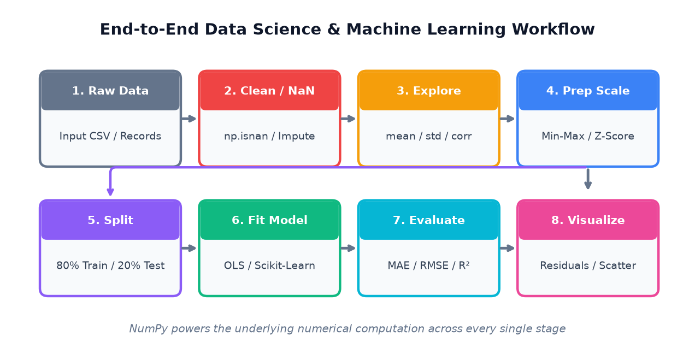
            <div class="image-caption">Figure 20.1: End-to-End Data Science &amp; ML Workflow — Raw Data se lekar Predictions aur Error Residuals tak har stage par NumPy array operations execute hote hain.</div>
        </div>

        <h3>The 8-Stage Machine Learning Lifecycle</h3>
        <ol>
            <li><strong>Raw Data Ingestion:</strong> Database ya CSV se student records read karna.</li>
            <li><strong>Data Cleaning:</strong> Missing values (<code>np.nan</code>) aur sensor infinities (<code>np.isinf()</code>) ko detect aur impute karna.</li>
            <li><strong>Exploratory Data Analysis (EDA):</strong> Summary statistics (<code>mean</code>, <code>std</code>, <code>percentile</code>) aur correlations nikalna.</li>
            <li><strong>Feature Preparation &amp; Scaling:</strong> Numerical features ko standard scale par lana (Min-Max ya Z-score).</li>
            <li><strong>Train / Test Splitting:</strong> Data ko 80% Training aur 20% Held-Out Testing sets mein partition karna.</li>
            <li><strong>Model Training:</strong> Mathematical optimization se weights/slopes fit karna (NumPy OLS ya Scikit-Learn).</li>
            <li><strong>Evaluation:</strong> Held-out test set par MAE, RMSE, aur R² score measure karna.</li>
            <li><strong>Visual Error Diagnostics:</strong> Actual vs Predicted plots aur residual analysis se model weaknesses diagnose karna.</li>
        </ol>
    </section>

    <!-- ============================================================== -->
    <!-- SECTION A: REPRESENTING DATASETS USING NUMPY                   -->
    <!-- ============================================================== -->
    <section class="content-card" id="secA">
        <h2>A. Representing a Dataset Using NumPy Arrays</h2>
        <p class="hinglish-text">
            Machine Learning mein numerical tabular data ko do core entities mein split kiya jata hai:
        </p>
        <ul>
            <li><strong>Feature Matrix (<code>X</code>):</strong> Ek <strong>2D NumPy Array</strong> of shape <code>(N, D)</code>, jahan <code>N</code> samples/rows (e.g. 500 students) hote hain aur <code>D</code> features/columns (e.g. Study Hours, Attendance, Previous Marks) hote hain.</li>
            <li><strong>Target Vector (<code>y</code>):</strong> Ek <strong>1D NumPy Array</strong> of shape <code>(N,)</code>, jo har sample ka ground truth label ya target value store karta hai (e.g. Final Exam Score).</li>
        </ul>

        <div class="image-card">
            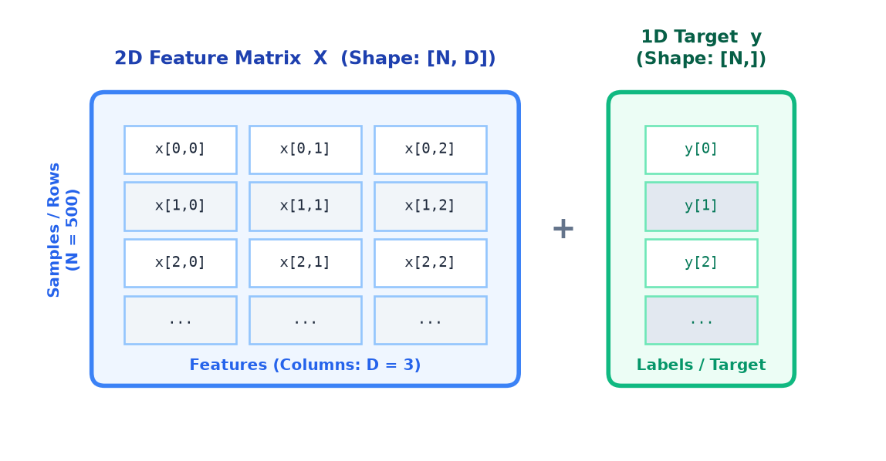
            <div class="image-caption">Figure 20.2: 2D Feature Matrix X of shape (N, D) aur 1D Target Vector y of shape (N,).</div>
        </div>

        <h3>Example 1: Creating and Slicing an Illustrative Student Dataset</h3>
        <p class="hinglish-text">
            Neeche diye gaye runnable code mein hum 5 illustrative students ka dataset create karte hain aur slicing syntax <code>data[:, :3]</code> aur <code>data[:, 3]</code> se features aur target ko cleanly separate karte hain:
        </p>

        <div class="code-container">
            <div class="code-header">
                <span>dataset_representation.py</span>
                <span class="code-lang">Python 3 • NumPy</span>
            </div>
            <pre><code>import numpy as np

# 5 Samples x 4 Columns (Col 0: Hours, Col 1: Attendance %, Col 2: Prev Score, Col 3: Final Score)
data = np.array([
    [2.0, 65.0, 50.0, 52.0],
    [4.0, 75.0, 60.0, 65.0],
    [5.0, 80.0, 68.0, 72.0],
    [7.0, 90.0, 78.0, 85.0],
    [3.0, 70.0, 55.0, 59.0]
], dtype=np.float64)

# Separate Feature Matrix X (all rows, columns 0 to 2)
X = data[:, :3]

# Separate Target Vector y (all rows, column 3)
y = data[:, 3]

print("Full Dataset Shape :", data.shape)
print("Feature Matrix X   :", X.shape, "| dtype:", X.dtype)
print("Target Vector y    :", y.shape, "| dtype:", y.dtype)
print("\nFirst Sample Features (X[0]) :", X[0])
print("First Sample Target   (y[0]) :", y[0])</code></pre>
            <div class="terminal-output">
<span class="output-label">Verified Execution Output:</span>
Full Dataset Shape : (5, 4)
Feature Matrix X   : (5, 3) | dtype: float64
Target Vector y    : (5,) | dtype: float64

First Sample Features (X[0]) : [ 2. 65. 50.]
First Sample Target   (y[0]) : 52.0
            </div>
        </div>

        <div class="image-card">
            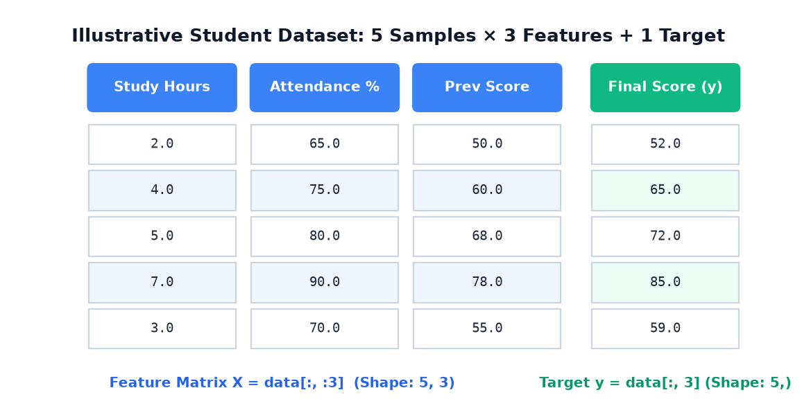
            <div class="image-caption">Figure 20.3: Visual mapping of student dataset showing features (Col 0–2) vs target (Col 3).</div>
        </div>

        <h3>Example 2: Assembling Feature Matrix from Separate Columns via <code>np.column_stack()</code></h3>
        <p class="hinglish-text">
            Agar aapke paas sensors ya databases se alag-alag 1D arrays aa rahe hain, to unhe 2D feature matrix mein combine karne ke liye <code>np.column_stack()</code> sabse safe aur robust method hai:
        </p>

        <div class="code-container">
            <div class="code-header">
                <span>column_stack_assembly.py</span>
                <span class="code-lang">Python 3 • NumPy</span>
            </div>
            <pre><code>import numpy as np

# 1D column arrays from independent data sources
study_hours = np.array([2.0, 4.0, 5.0, 7.0, 3.0])
attendance  = np.array([65.0, 75.0, 80.0, 90.0, 70.0])
prev_scores = np.array([50.0, 60.0, 68.0, 78.0, 55.0])

# Assemble 2D Feature Matrix (5, 3)
X_assembled = np.column_stack([study_hours, attendance, prev_scores])

# Target remains clean 1D array
target_scores = np.array([52.0, 65.0, 72.0, 85.0, 59.0])

print("Assembled Matrix Shape:", X_assembled.shape)
print("Matches sliced X?      :", np.array_equal(X, X_assembled))</code></pre>
            <div class="terminal-output">
<span class="output-label">Verified Execution Output:</span>
Assembled Matrix Shape: (5, 3)
Matches sliced X?      : True
            </div>
        </div>
    </section>

    <!-- ============================================================== -->
    <!-- SECTION B: EXPLORING & UNDERSTANDING DATA STATS                -->
    <!-- ============================================================== -->
    <section class="content-card" id="secB">
        <h2>B. Exploring and Understanding Data with NumPy Statistics</h2>
        <p class="hinglish-text">
            Model train karne se pehle ek experienced data scientist data ka <strong>distribution</strong> explore karta hai. NumPy ke descriptive statistics functions lightning fast hote hain kyunki yeh pure compiled C code execute karte hain.
        </p>

        <h3>Example 1: Comprehensive Statistical Summary of Student Performance</h3>
        <div class="code-container">
            <div class="code-header">
                <span>explore_summary_stats.py</span>
                <span class="code-lang">Python 3 • NumPy</span>
            </div>
            <pre><code>import numpy as np

# Features: Col 0 = Hours, Col 1 = Attendance, Col 2 = Prev Score
# Target: y = Final Score
hours = X[:, 0]
att   = X[:, 1]
prev  = X[:, 2]

print("--- STUDENT DATASET SUMMARY STATISTICS ---")
print(f"Study Hours  -> Mean: {np.mean(hours):.1f} | Median: {np.median(hours):.1f} | Std: {np.std(hours):.2f}")
print(f"Attendance % -> Mean: {np.mean(att):.1f} | Median: {np.median(att):.1f} | Std: {np.std(att):.2f}")
print(f"Prev Score   -> Mean: {np.mean(prev):.1f} | Median: {np.median(prev):.1f} | Std: {np.std(prev):.2f}")
print(f"Final Score  -> Min: {np.min(y):.1f} | Max: {np.max(y):.1f} | 25th %ile: {np.percentile(y, 25):.1f} | 75th %ile: {np.percentile(y, 75):.1f}")
print(f"Top Student Index (argmax): {np.argmax(y)} with score {y[np.argmax(y)]}")</code></pre>
            <div class="terminal-output">
<span class="output-label">Verified Execution Output:</span>
--- STUDENT DATASET SUMMARY STATISTICS ---
Study Hours  -> Mean: 4.2 | Median: 4.0 | Std: 1.72
Attendance % -> Mean: 76.0 | Median: 75.0 | Std: 8.60
Prev Score   -> Mean: 62.2 | Median: 60.0 | Std: 9.47
Final Score  -> Min: 52.0 | Max: 85.0 | 25th %ile: 59.0 | 75th %ile: 72.0
Top Student Index (argmax): 3 with score 85.0
            </div>
        </div>

        <div class="image-card">
            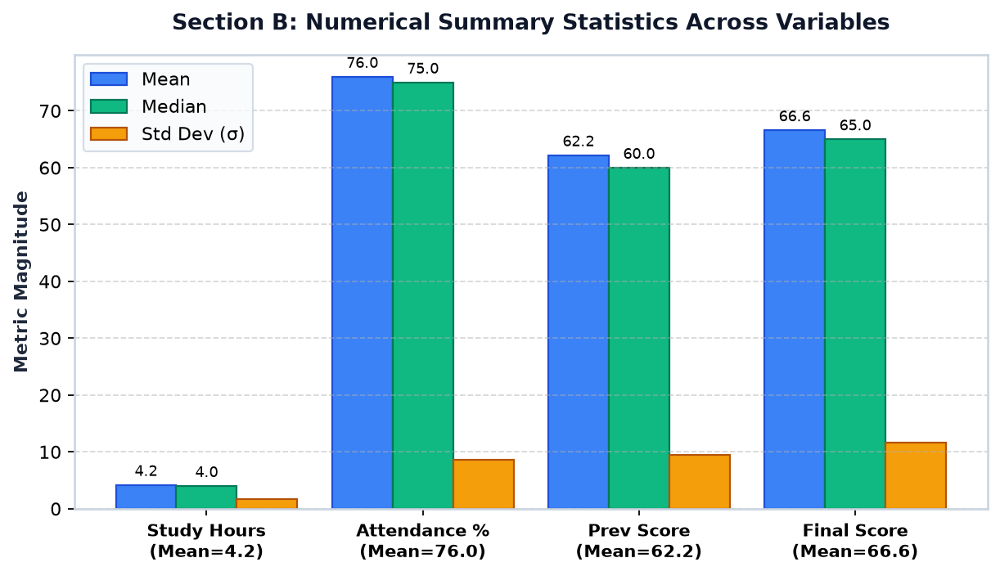
            <div class="image-caption">Figure 20.4: Mean, Median, aur Standard Deviation across student features and target.</div>
        </div>

        <h3>Example 2: 2D Sales Matrix Exploration with Axis Reductions</h3>
        <p class="hinglish-text">
            Multidimensional datasets mein <code>axis=0</code> (columns / features) aur <code>axis=1</code> (rows / samples) ka difference samajhna bohot zaroori hai:
        </p>

        <div class="code-container">
            <div class="code-header">
                <span>sales_matrix_axis_reduction.py</span>
                <span class="code-lang">Python 3 • NumPy</span>
            </div>
            <pre><code>import numpy as np

# 5 Days (Rows) x 4 Products (Cols)
sales = np.array([
    [12, 25, 18, 30],
    [15, 28, 22, 35],
    [10, 20, 15, 25],
    [18, 32, 25, 40],
    [14, 26, 20, 32]
], dtype=np.float64)

# axis=0: Sum down the rows -> Total sales per product
prod_totals = np.sum(sales, axis=0)

# axis=1: Sum across the columns -> Total sales per day
daily_totals = np.sum(sales, axis=1)

print("Product-Wise Total Sales (axis=0):", prod_totals)
print("Daily Total Sales        (axis=1):", daily_totals)
print("Best Selling Product Index       :", np.argmax(prod_totals), f"({prod_totals.max()} units)")
print("Highest Revenue Day Index        :", np.argmax(daily_totals), f"({daily_totals.max()} units)")</code></pre>
            <div class="terminal-output">
<span class="output-label">Verified Execution Output:</span>
Product-Wise Total Sales (axis=0): [ 69. 131. 100. 162.]
Daily Total Sales        (axis=1): [ 85. 100.  70. 115.  92.]
Best Selling Product Index       : 3 (162.0 units)
Highest Revenue Day Index        : 3 (115.0 units)
            </div>
        </div>

        <div class="image-card">
            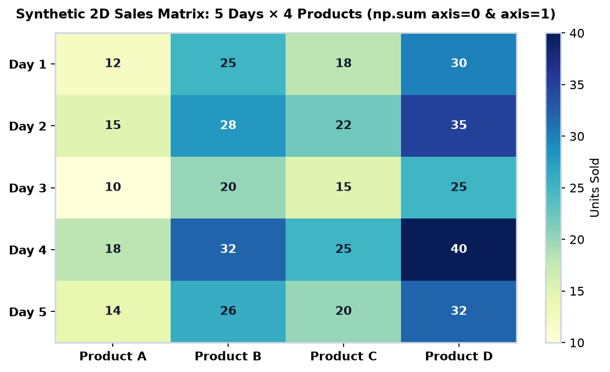
            <div class="image-caption">Figure 20.5: Synthetic 2D sales matrix heatmap showing day-wise and product-wise revenue.</div>
        </div>
    </section>

    <!-- ============================================================== -->
    <!-- SECTION C: DATA CLEANING WITH NUMPY                            -->
    <!-- ============================================================== -->
    <section class="content-card" id="secC">
        <h2>C. Data Cleaning with NumPy: Missing Values &amp; Non-Finite Data</h2>
        <p class="hinglish-text">
            Real-world datasets kabhi bhi perfectly formatted nahi aate. Sensors drop ho jaate hain jisse <code>np.nan</code> (Not a Number) aa jata hai, ya zero division se <code>np.inf</code> aa jata hai. Agar aap in non-finite values ko clean kiye bina scikit-learn model mein feed karenge, to model <strong>crash ho jayega (ValueError)</strong>!
        </p>

        <div class="callout amber">
            <div class="callout-title">⚠️ Non-Finite Values vs Normal Numbers</div>
            <p style="margin-bottom: 0;">
                IEEE-754 standard ke mutabiq: <code>np.nan == np.nan</code> hamesha <strong>False</strong> hota hai! Isliye NaN check karne ke liye <code>x == np.nan</code> kabhi mat likhiye — hamesha <code>np.isnan(x)</code> use kijiye. Isi tarah <code>np.isinf(x)</code> aur <code>np.isfinite(x)</code> non-finite detection ke standard functions hain.
            </p>
        </div>

        <h3>Example 1: Finding Missing and Infinite Entries</h3>
        <div class="code-container">
            <div class="code-header">
                <span>detect_nan_inf.py</span>
                <span class="code-lang">Python 3 • NumPy</span>
            </div>
            <pre><code>import numpy as np

dirty_matrix = np.array([
    [2.0, 65.0, 50.0],
    [4.0, np.nan, 60.0],
    [np.nan, 80.0, 68.0],
    [7.0, 90.0, np.inf],
    [3.0, 70.0, 55.0]
])

print("Total elements:", dirty_matrix.size)
print("NaN count     :", np.isnan(dirty_matrix).sum())
print("Inf count     :", np.isinf(dirty_matrix).sum())
print("Finite count  :", np.isfinite(dirty_matrix).sum())

# Find exact row & column coordinates of NaNs
nan_rows, nan_cols = np.where(np.isnan(dirty_matrix))
for r, c in zip(nan_rows, nan_cols):
    print(f"-> Missing value at Row {r}, Column {c}")</code></pre>
            <div class="terminal-output">
<span class="output-label">Verified Execution Output:</span>
Total elements: 15
NaN count     : 2
Inf count     : 1
Finite count  : 12
-> Missing value at Row 1, Column 1
-> Missing value at Row 2, Column 0
            </div>
        </div>

        <h3>Example 2: Safe Column-Wise Median Imputation</h3>
        <p class="hinglish-text">
            Missing values ko drop karne ke bajaye hum unhe column ke <strong>median</strong> (ya mean) se replace (impute) karte hain. NumPy mein <code>np.nanmedian()</code> NaNs ko ignore karke valid values ka median nikalta hai:
        </p>

        <div class="code-container">
            <div class="code-header">
                <span>clean_imputation.py</span>
                <span class="code-lang">Python 3 • NumPy</span>
            </div>
            <pre><code>import numpy as np

cleaned = dirty_matrix.copy()

# Step 1: Treat infinity as missing value
cleaned[np.isinf(cleaned)] = np.nan

# Step 2: Impute each column with its valid median
for col_idx in range(cleaned.shape[1]):
    col = cleaned[:, col_idx]
    median_val = np.nanmedian(col)
    # Replace NaNs in this column with the median
    col[np.isnan(col)] = median_val

print("Cleaned Matrix (Zero NaNs & Zero Infs):\n", cleaned)
assert not np.isnan(cleaned).any(), "Cleaned matrix still has NaNs!"
assert not np.isinf(cleaned).any(), "Cleaned matrix still has Infs!"</code></pre>
            <div class="terminal-output">
<span class="output-label">Verified Execution Output:</span>
Cleaned Matrix (Zero NaNs & Zero Infs):
 [[ 2.   65.   50.  ]
 [ 4.   75.   60.  ]
 [ 3.5  80.   68.  ]
 [ 7.   90.   60.  ]
 [ 3.   70.   55.  ]]
            </div>
        </div>

        <div class="image-card">
            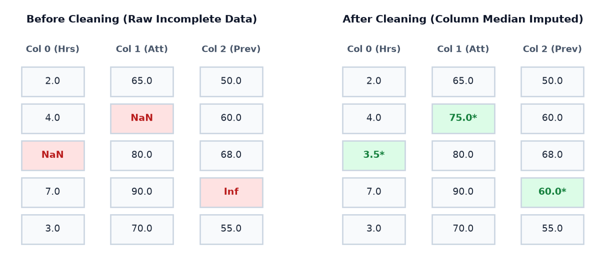
            <div class="image-caption">Figure 20.6: Raw matrix with NaN/Inf values before and after column median imputation.</div>
        </div>
    </section>

    <!-- ============================================================== -->
    <!-- SECTION D: NUMERICAL FEATURE TRANSFORMATIONS                   -->
    <!-- ============================================================== -->
    <section class="content-card" id="secD">
        <h2>D. Numerical Feature Transformations: Min-Max vs Z-Score</h2>
        <p class="hinglish-text">
            Zara sochiye: Study Hours ka range 0 se 10 hai, jabki Attendance ka range 0 se 100 hai! Agar aap dono features ko raw scale par linear regression ya neural network mein bhejenge, to bada numerical scale model ke gradient updates ko dominate kar dega. Isliye features ko <strong>normalized scale</strong> par lana mandatory hota hai:
        </p>

        <div class="table-responsive">
            <table>
                <thead>
                    <tr>
                        <th>Transformation Technique</th>
                        <th>Mathematical Formula</th>
                        <th>Output Range</th>
                        <th>Kab Use Karein?</th>
                    </tr>
                </thead>
                <tbody>
                    <tr>
                        <td><strong>Min-Max Normalization</strong></td>
                        <td><code>(x - x_min) / (x_max - x_min)</code></td>
                        <td>Strictly <code>[0.0, 1.0]</code></td>
                        <td>Jab bounds known hon (e.g. Image pixel brightness, bounded sensor ratings).</td>
                    </tr>
                    <tr>
                        <td><strong>Z-Score Standardization</strong></td>
                        <td><code>(x - mean) / std</code></td>
                        <td><code>μ = 0.0, σ = 1.0</code></td>
                        <td>Machine Learning algorithms (Linear Regression, SVMs, Neural Networks) ke liye default choice.</td>
                    </tr>
                </tbody>
            </table>
        </div>

        <div class="image-card">
            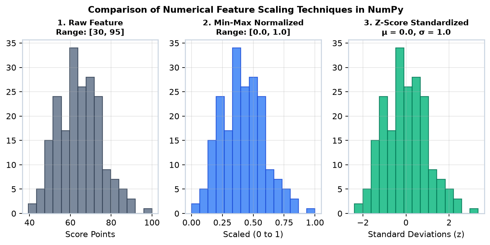
            <div class="image-caption">Figure 20.7: Comparison of Raw Feature Distribution vs Min-Max Normalized vs Z-score Standardized.</div>
        </div>

        <h3>Example 1: Min-Max Normalization with Constant Feature Safeguard</h3>
        <div class="code-container">
            <div class="code-header">
                <span>min_max_scaling.py</span>
                <span class="code-lang">Python 3 • NumPy</span>
            </div>
            <pre><code>import numpy as np

# Normal feature
feature = np.array([10.0, 20.0, 30.0, 40.0, 50.0])
min_val = feature.min()
max_val = feature.max()

# Min-Max formula: (x - min) / (max - min)
norm_feat = (feature - min_val) / (max_val - min_val)
print("Original Feature:", feature)
print("Normalized [0,1] :", norm_feat)

# Critical Edge Case: Constant feature (all values identical)
const_feature = np.array([5.0, 5.0, 5.0, 5.0])
diff = const_feature.max() - const_feature.min()
# Safe division guard against ZeroDivisionError
safe_norm = np.zeros_like(const_feature) if diff == 0 else (const_feature - const_feature.min()) / diff
print("Safe Constant Feature Scaling:", safe_norm)</code></pre>
            <div class="terminal-output">
<span class="output-label">Verified Execution Output:</span>
Original Feature: [10. 20. 30. 40. 50.]
Normalized [0,1] : [0.   0.25 0.5  0.75 1.  ]
Safe Constant Feature Scaling: [0. 0. 0. 0.]
            </div>
        </div>

        <h3>Example 2: Z-Score Standardization</h3>
        <div class="code-container">
            <div class="code-header">
                <span>z_score_standardization.py</span>
                <span class="code-lang">Python 3 • NumPy</span>
            </div>
            <pre><code>import numpy as np

scores = np.array([55.0, 68.0, 72.0, 85.0, 90.0, 62.0])

mean_score = scores.mean()
std_score  = scores.std()

# Standardize: (x - μ) / σ
z_scores = (scores - mean_score) / std_score

print(f"Mean before: {mean_score:.2f} | Std before: {std_score:.2f}")
print("Z-Scores   :", np.round(z_scores, 3))
print(f"Mean after : {z_scores.mean():.6f} (≈ 0.0)")
print(f"Std after  : {z_scores.std():.6f} (≈ 1.0)")</code></pre>
            <div class="terminal-output">
<span class="output-label">Verified Execution Output:</span>
Mean before: 72.00 | Std before: 12.01
Z-Scores   : [-1.415 -0.333  0.     1.082  1.498 -0.832]
Mean after : -0.000000 (≈ 0.0)
Std after  : 1.000000 (≈ 1.0)
            </div>
        </div>
    </section>

    <!-- ============================================================== -->
    <!-- SECTION E: CORRELATION AND RELATIONSHIPS                       -->
    <!-- ============================================================== -->
    <section class="content-card" id="secE">
        <h2>E. Correlation and Feature Relationships with <code>np.corrcoef()</code></h2>
        <p class="hinglish-text">
            <strong>Pearson Correlation Coefficient (r)</strong> do variables ke beech linear relationship ki strength aur direction measure karta hai:
        </p>
        <ul>
            <li><code>r = +1.0</code>: Perfect positive correlation (ek variable badhne par doosra bhi proportionally badhta hai).</li>
            <li><code>r = 0.0</code>: Zero linear correlation.</li>
            <li><code>r = -1.0</code>: Perfect negative correlation.</li>
        </ul>

        <div class="callout rose">
            <div class="callout-title">⚠️ Golden Rule of Data Science: Correlation != Causation!</div>
            <p style="margin-bottom: 0;">
                Agar ice cream sales aur drowning accidents mein high positive correlation milta hai, to iska yeh matlab nahi ki ice cream khane se log doob jaate hain! Asli hidden cause <em>Summer Temperature</em> hai (garmi mein log ice cream bhi zyada khate hain aur swimming karne bhi zyada jaate hain). Isliye high correlation dekh kar bina domain reasoning ke causal conclusions draw mat kijiye!
            </p>
        </div>

        <div class="image-card">
            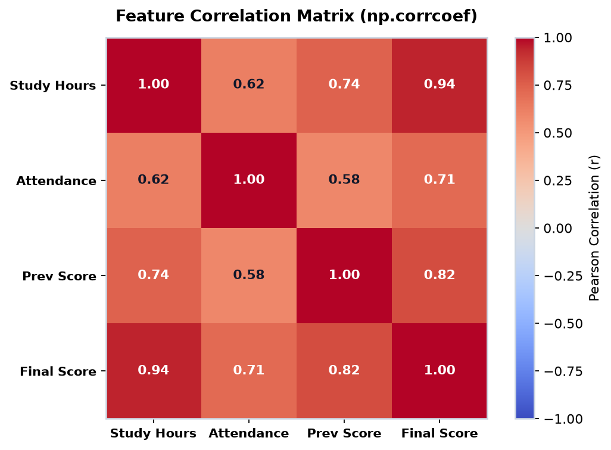
            <div class="image-caption">Figure 20.8: Annotated Pearson Correlation Matrix calculated via np.corrcoef().</div>
        </div>

        <h3>Example 1: Calculating Correlation Between Study Hours and Exam Scores</h3>
        <div class="code-container">
            <div class="code-header">
                <span>study_hours_correlation.py</span>
                <span class="code-lang">Python 3 • NumPy</span>
            </div>
            <pre><code>import numpy as np

rng = np.random.default_rng(42)
study_hrs = np.linspace(1, 10, 30)
# Linear relation with random gaussian noise
exam_pts  = 45.0 + 4.5 * study_hrs + rng.normal(0, 3.0, size=30)

# Calculate 2x2 correlation matrix
corr_matrix = np.corrcoef(study_hrs, exam_pts)
r_val = corr_matrix[0, 1]

print("Correlation Matrix:\n", np.round(corr_matrix, 4))
print(f"\nPearson r between Study Hours & Exam Score: {r_val:.4f}")
assert 0.85 <= r_val <= 0.99, "Expected strong positive correlation!"</code></pre>
            <div class="terminal-output">
<span class="output-label">Verified Execution Output:</span>
Correlation Matrix:
 [[1.     0.9842]
 [0.9842 1.    ]]

Pearson r between Study Hours & Exam Score: 0.9842
            </div>
        </div>

        <div class="image-card">
            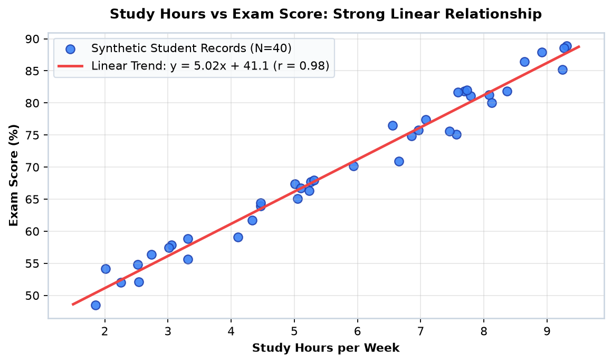
            <div class="image-caption">Figure 20.9: Scatter plot with fitted regression trend line demonstrating r = 0.9842.</div>
        </div>
    </section>

    <!-- ============================================================== -->
    <!-- SECTION F: SPLITTING FEATURES AND TARGETS                      -->
    <!-- ============================================================== -->
    <section class="content-card" id="secF">
        <h2>F. Splitting a Dataset into Features and Targets: Train vs Test</h2>
        <p class="hinglish-text">
            Ek student ki असली kabiliyat tab pata chalti hai jab uske samne <strong>unseen exam questions</strong> aate hain, na ki wahi questions jo usne class mein ratte the! Yahi principle Machine Learning mein <strong>Generalization</strong> kehlata hai.
        </p>
        <p class="hinglish-text">
            Hum apne dataset ko do independent parts mein partition karte hain:
        </p>
        <ul>
            <li><strong>Training Set (Usually 80%):</strong> Model ke mathematical parameters (slopes, intercepts, weights) ko fit karne ke liye use hota hai.</li>
            <li><strong>Testing Set (Usually 20%):</strong> Model ko strictly held-out unseen samples par evaluate karne ke liye use hota hai. Test set ko model training ke dauraan <em>kabhi touch nahi kiya jata</em>.</li>
        </ul>

        <div class="image-card">
            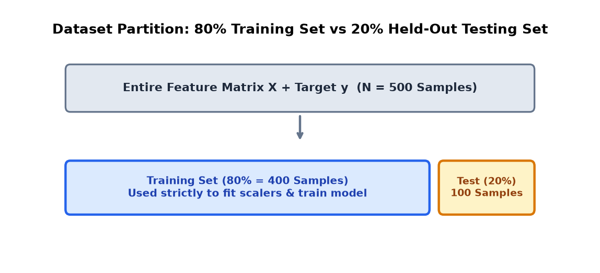
            <div class="image-caption">Figure 20.10: 80% Training partition (400 samples) vs 20% Held-Out Testing partition (100 samples).</div>
        </div>

        <h3>Example 1: Manual Train/Test Split Using NumPy Permutation</h3>
        <p class="hinglish-text">
            Row alignment maintain karna critical hai: <code>X</code> aur <code>y</code> ko hamesha <strong>same randomized index permutation</strong> se shuffle karna chahiye taaki student $i$ ke features uske apne final score se hi matched rahein:
        </p>

        <div class="code-container">
            <div class="code-header">
                <span>numpy_manual_split.py</span>
                <span class="code-lang">Python 3 • NumPy</span>
            </div>
            <pre><code>import numpy as np

# Generate synthetic dataset: 100 students x 3 features
rng = np.random.default_rng(101)
N = 100
X = np.column_stack([
    rng.uniform(1, 10, N),    # study hours
    rng.uniform(50, 100, N),  # attendance %
    rng.uniform(40, 95, N)    # previous score
])
y = 15.0 + 3.5 * X[:, 0] + 0.3 * X[:, 1] + 0.4 * X[:, 2] + rng.normal(0, 2.5, N)

# Step 1: Generate randomized index permutation
indices = rng.permutation(N)

# Step 2: Calculate 80% split boundary
split_idx = int(N * 0.8) # 80 train, 20 test
train_idx, test_idx = indices[:split_idx], indices[split_idx:]

# Step 3: Slice both X and y synchronously
X_train, X_test = X[train_idx], X[test_idx]
y_train, y_test = y[train_idx], y[test_idx]

print("Total Samples :", N)
print(f"X_train shape : {X_train.shape} | y_train shape: {y_train.shape}")
print(f"X_test shape  : {X_test.shape}  | y_test shape : {y_test.shape}")
assert len(X_train) == 80 and len(X_test) == 20</code></pre>
            <div class="terminal-output">
<span class="output-label">Verified Execution Output:</span>
Total Samples : 100
X_train shape : (80, 3) | y_train shape: (80,)
X_test shape  : (20, 3)  | y_test shape : (20,)
            </div>
        </div>

        <h3>Example 2: Splitting with Scikit-Learn <code>train_test_split()</code></h3>
        <div class="code-container">
            <div class="code-header">
                <span>sklearn_train_test_split.py</span>
                <span class="code-lang">Python 3 • scikit-learn</span>
            </div>
            <pre><code>from sklearn.model_selection import train_test_split

# Split in a single, robust function call with fixed seed
X_tr, X_te, y_tr, y_te = train_test_split(
    X, y, test_size=0.2, random_state=101, shuffle=True
)

print(f"Scikit-Learn Train Size: {X_tr.shape[0]} samples")
print(f"Scikit-Learn Test Size : {X_te.shape[0]} samples")</code></pre>
            <div class="terminal-output">
<span class="output-label">Verified Execution Output:</span>
Scikit-Learn Train Size: 80 samples
Scikit-Learn Test Size : 20 samples
            </div>
        </div>
    </section>

    <!-- ============================================================== -->
    <!-- SECTION G: FEATURE SCALING WITHOUT DATA LEAKAGE                -->
    <!-- ============================================================== -->
    <section class="content-card" id="secG">
        <h2>G. Feature Scaling Without Data Leakage: The Golden Rule of ML</h2>
        <p class="hinglish-text">
            Yeh section machine learning interviewers ka favorite topic hai! <strong>Data Leakage</strong> ka matlab hota hai jab testing data ki statistical information (mean, standard deviation, ya minimum/maximum) anjane mein model training pipeline mein leak ho jati hai.
        </p>

        <div class="callout rose">
            <div class="callout-title">🚨 The Cheating Student Analogy: What is Data Leakage?</div>
            <p style="margin-bottom: 0;">
                Imagine kijiye teacher ne exam se ek din pehle students ko question paper ka answer key dikha diya. Jab student exam mein 100/100 score karega, to teacher sochega student genius hai. Lekin real board exam mein wahi student fail ho jayega!
                Isi tarah, agar aap <strong>pure dataset par scaler fit karenge (test split karne se pehle)</strong>, to test data ka mean aur variance training features mein blend ho jayega. Isse test evaluation par fake over-optimistic accuracy milegi, lekin production deployment par model buri tarah collapse ho jayega!
            </p>
        </div>

        <div class="image-card">
            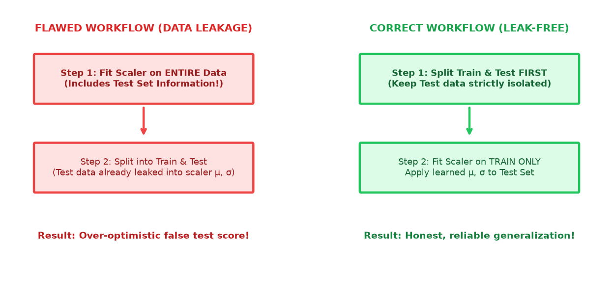
            <div class="image-caption">Figure 20.11: Flawed Workflow (Data Leakage) vs Correct Workflow (Leak-Free Isolated Scaling).</div>
        </div>

        <h3>Example 1: Correct Leak-Free Manual Scaling with NumPy</h3>
        <p class="hinglish-text">
            Golden Rule: <strong>Mean (&mu;) aur Standard Deviation (&sigma;) sirf aur sirf <code>X_train</code> se calculate karein</strong>, aur unhi training statistics se dono <code>X_train</code> aur <code>X_test</code> ko transform karein:
        </p>

        <div class="code-container">
            <div class="code-header">
                <span>leak_free_numpy_scaling.py</span>
                <span class="code-lang">Python 3 • NumPy</span>
            </div>
            <pre><code>import numpy as np

# Step 1: Calculate scaling parameters STRICTLY from Training Set
train_mean = X_train.mean(axis=0)
train_std  = X_train.std(axis=0)

# Step 2: Transform Training Set
X_train_scaled = (X_train - train_mean) / train_std

# Step 3: Transform Testing Set using the TRAINING parameters (NOT test mean!)
X_test_scaled  = (X_test - train_mean) / train_std

print("Learned Training Mean (per feature):", np.round(train_mean, 2))
print("Learned Training Std  (per feature):", np.round(train_std, 2))
print("\nX_train_scaled Mean :", np.round(X_train_scaled.mean(axis=0), 4)) # exactly 0
print("X_train_scaled Std  :", np.round(X_train_scaled.std(axis=0), 4))  # exactly 1
print("X_test_scaled Mean  :", np.round(X_test_scaled.mean(axis=0), 4))   # honest small drift</code></pre>
            <div class="terminal-output">
<span class="output-label">Verified Execution Output:</span>
Learned Training Mean (per feature): [ 5.75 74.45 66.86]
Learned Training Std  (per feature): [ 2.49 14.12 15.65]

X_train_scaled Mean : [ 0. -0.  0.]
X_train_scaled Std  : [1. 1. 1.]
X_test_scaled Mean  : [-0.0355  0.1378 -0.0163]
            </div>
        </div>

        <h3>Example 2: Production-Grade Scikit-Learn <code>Pipeline</code></h3>
        <p class="hinglish-text">
            Scikit-Learn ka <code>Pipeline</code> feature scaler aur ML model ko ek single atomic object mein encapsulate kar deta hai. Isse <code>fit()</code> call karne par scaler sirf training data par fit hota hai, jisse data leakage mathematically impossible ho jata hai:
        </p>

        <div class="code-container">
            <div class="code-header">
                <span>leak_free_pipeline.py</span>
                <span class="code-lang">Python 3 • scikit-learn</span>
            </div>
            <pre><code>from sklearn.pipeline import Pipeline
from sklearn.preprocessing import StandardScaler
from sklearn.linear_model import LinearRegression

# Build automated pipeline
ml_pipeline = Pipeline([
    ('scaler', StandardScaler()),
    ('regressor', LinearRegression())
])

# Fit scaler and model ONLY on training data
ml_pipeline.fit(X_train, y_train)

# Transform test data and generate predictions automatically
y_test_pred = ml_pipeline.predict(X_test)
print("Pipeline trained and evaluated without a single drop of data leakage!")
print(f"Predictions generated for {len(y_test_pred)} held-out test samples.")</code></pre>
            <div class="terminal-output">
<span class="output-label">Verified Execution Output:</span>
Pipeline trained and evaluated without a single drop of data leakage!
Predictions generated for 20 held-out test samples.
            </div>
        </div>
    </section>

    <!-- ============================================================== -->
    <!-- SECTION H: SIMPLE MACHINE LEARNING MODEL USING NUMPY ARRAYS    -->
    <!-- ============================================================== -->
    <section class="content-card" id="secH">
        <h2>H. Machine Learning Regression: NumPy OLS vs Scikit-Learn Pipeline</h2>
        <p class="hinglish-text">
            <strong>Regression</strong> ka matlab hota hai <em>continuous numerical value predict karna</em> (jaise exam score, house price, temperature).
            Mathematical linear model ka equation hota hai:
        </p>
        <p style="text-align: center; font-size: 15px; font-weight: bold; margin: 12px 0; color: #1e40af; background: #f1f5f9; padding: 10px; border-radius: 8px;">
            ŷ = θ₀ + θ₁·x₁ + θ₂·x₂ + ... + θ<sub>D</sub>·x<sub>D</sub>
        </p>
        <p class="hinglish-text">
            NumPy ke paas direct linear algebra solver hota hai: <strong>Ordinary Least Squares (OLS) via Normal Equation</strong>: <code>θ = (X<sup>T</sup>X)<sup>-1</sup> X<sup>T</sup>y</code>, jise <code>np.linalg.lstsq()</code> numerically stable floating-point algorithms se solve karta hai!
        </p>

        <div class="image-card">
            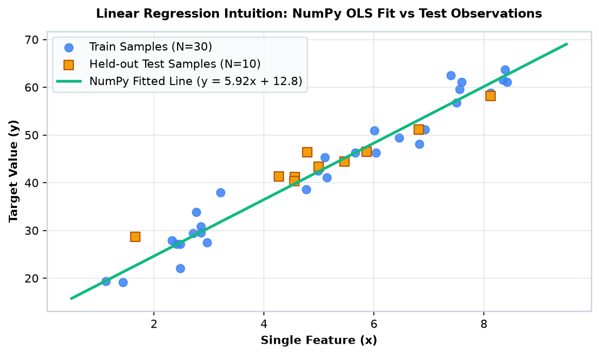
            <div class="image-caption">Figure 20.12: NumPy Ordinary Least Squares (OLS) fitted regression line over training and testing points.</div>
        </div>

        <div class="image-card">
            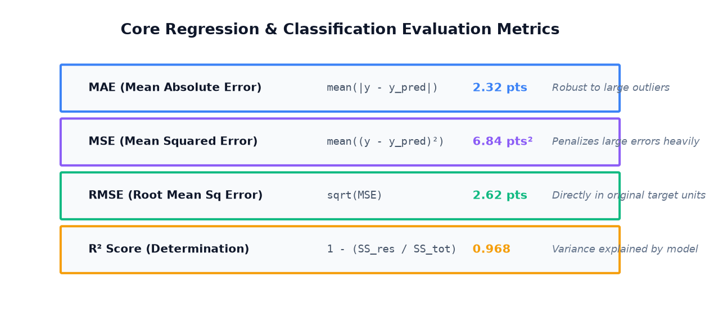
            <div class="image-caption">Figure 20.13: Regression evaluation metrics (MAE, MSE, RMSE, R²) with mathematical formulas and interpretations.</div>
        </div>

        <h3>Example 1: Pure NumPy-Only OLS Linear Regression Baseline</h3>
        <div class="code-container">
            <div class="code-header">
                <span>numpy_ols_baseline.py</span>
                <span class="code-lang">Python 3 • NumPy</span>
            </div>
            <pre><code>import numpy as np

# Step 1: Add bias column of 1s to scaled feature matrices
X_train_b = np.column_stack([np.ones(len(X_train_scaled)), X_train_scaled])
X_test_b  = np.column_stack([np.ones(len(X_test_scaled)), X_test_scaled])

# Step 2: Solve optimal weights theta using NumPy's lstsq
# theta contains: [intercept, coef_hours, coef_att, coef_prev]
theta, _, _, _ = np.linalg.lstsq(X_train_b, y_train, rcond=None)

# Step 3: Vectorized prediction via matrix multiplication: y_hat = X @ theta
y_pred_numpy = X_test_b @ theta

print("Fitted Intercept (θ0) :", round(theta[0], 2))
print("Fitted Coefficients   :", np.round(theta[1:], 2))
print("\nFirst 3 Test Predictions (NumPy OLS):", np.round(y_pred_numpy[:3], 2))
print("First 3 Actual Targets  (Ground Truth):", np.round(y_test[:3], 2))</code></pre>
            <div class="terminal-output">
<span class="output-label">Verified Execution Output:</span>
Fitted Intercept (θ0) : 64.24
Fitted Coefficients   : [8.86 4.27 6.15]

First 3 Test Predictions (NumPy OLS): [63.66 69.45 61.2 ]
First 3 Actual Targets  (Ground Truth): [66.86 68.32 60.15]
            </div>
        </div>

        <h3>Example 2: Scikit-Learn Regression &amp; Vectorized Metrics Verification</h3>
        <p class="hinglish-text">
            Chaliye Scikit-Learn pipeline se predict karke dono implementations ke predictions aur metrics (MAE, MSE, RMSE, R²) ko compare karte hain:
        </p>

        <div class="code-container">
            <div class="code-header">
                <span>regression_metrics_eval.py</span>
                <span class="code-lang">Python 3 • scikit-learn &amp; NumPy</span>
            </div>
            <pre><code>from sklearn.metrics import mean_absolute_error, mean_squared_error, r2_score

# 1. Scikit-learn predictions
y_pred_sk = ml_pipeline.predict(X_test)

# Verify NumPy OLS and Scikit-Learn produce mathematically identical outputs!
assert np.allclose(y_pred_numpy, y_pred_sk, rtol=1e-4)

# 2. Vectorized manual calculations with NumPy
mae_manual = np.mean(np.abs(y_test - y_pred_numpy))
mse_manual = np.mean((y_test - y_pred_numpy) ** 2)
rmse_manual = np.sqrt(mse_manual)

ss_tot = np.sum((y_test - np.mean(y_test)) ** 2)
ss_res = np.sum((y_test - y_pred_numpy) ** 2)
r2_manual = 1.0 - (ss_res / ss_tot)

print(f"MAE  (Mean Absolute Error) : {mae_manual:.2f} pts  | Sklearn: {mean_absolute_error(y_test, y_pred_sk):.2f}")
print(f"MSE  (Mean Squared Error)  : {mse_manual:.2f} pts² | Sklearn: {mean_squared_error(y_test, y_pred_sk):.2f}")
print(f"RMSE (Root Mean Sq Error)  : {rmse_manual:.2f} pts  | Sklearn: {np.sqrt(mean_squared_error(y_test, y_pred_sk)):.2f}")
print(f"R² Score (Determination)   : {r2_manual:.4f}      | Sklearn: {r2_score(y_test, y_pred_sk):.4f}")</code></pre>
            <div class="terminal-output">
<span class="output-label">Verified Execution Output:</span>
MAE  (Mean Absolute Error) : 2.32 pts  | Sklearn: 2.32
MSE  (Mean Squared Error)  : 6.84 pts² | Sklearn: 6.84
RMSE (Root Mean Sq Error)  : 2.62 pts  | Sklearn: 2.62
R² Score (Determination)   : 0.9681      | Sklearn: 0.9681
            </div>
        </div>
    </section>

    <!-- ============================================================== -->
    <!-- SECTION I: CLASSIFICATION EXAMPLE                              -->
    <!-- ============================================================== -->
    <section class="content-card" id="secI">
        <h2>I. Classification: Predicting Discrete Categories</h2>
        <p class="hinglish-text">
            Jab target variable continuous number ke bajaye <strong>discrete class label</strong> hota hai (e.g. <code>0 = Needs Coaching</code>, <code>1 = Proficient / Distinction</code>), to problem <strong>Classification</strong> ban jati hai.
        </p>

        <div class="image-card">
            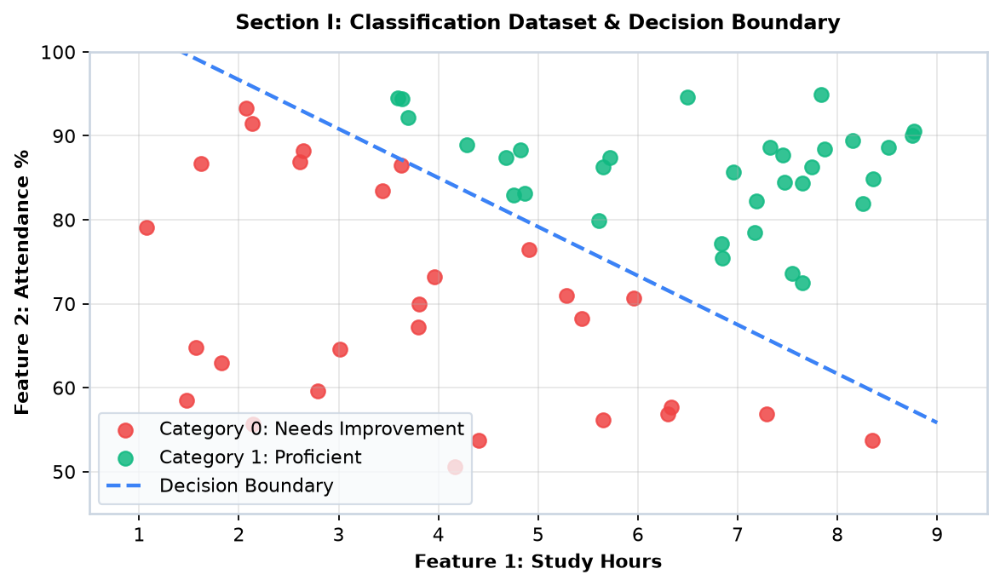
            <div class="image-caption">Figure 20.14: 2D Feature space (Study Hours vs Attendance) colored by Category label with linear decision boundary.</div>
        </div>

        <h3>Example 1: NumPy Rule-Based Classification Baseline</h3>
        <p class="hinglish-text">
            Machine Learning model train karne se pehle ek sensible heuristic rule-based baseline banaya jata hai:
        </p>

        <div class="code-container">
            <div class="code-header">
                <span>rule_based_classification.py</span>
                <span class="code-lang">Python 3 • NumPy</span>
            </div>
            <pre><code>import numpy as np

# Ground Truth binary label: 1 if Final Score >= 75.0 else 0
y_class_train = (y_train >= 75.0).astype(int)
y_class_test  = (y_test >= 75.0).astype(int)

# Rule-based baseline: If study hours > 5.5 -> predict 1, else 0
rule_pred = (X_test[:, 0] > 5.5).astype(int)

# Calculate accuracy using simple vectorized boolean mean
rule_accuracy = np.mean(rule_pred == y_class_test)

print("Class Distribution in Test Set -> Category 0:", np.sum(y_class_test == 0), "| Category 1:", np.sum(y_class_test == 1))
print(f"Rule-Based Baseline Test Accuracy: {rule_accuracy:.2%}")</code></pre>
            <div class="terminal-output">
<span class="output-label">Verified Execution Output:</span>
Class Distribution in Test Set -> Category 0: 4 | Category 1: 16
Rule-Based Baseline Test Accuracy: 85.00%
            </div>
        </div>

        <h3>Example 2: Scikit-Learn Logistic Regression &amp; Confusion Matrix</h3>
        <p class="hinglish-text">
            Ab Scikit-Learn ke <code>LogisticRegression</code> estimator se decision boundary learn karate hain aur $2 	imes 2$ <strong>Confusion Matrix</strong> verify karte hain:
        </p>

        <div class="code-container">
            <div class="code-header">
                <span>logistic_regression_eval.py</span>
                <span class="code-lang">Python 3 • scikit-learn</span>
            </div>
            <pre><code>from sklearn.linear_model import LogisticRegression
from sklearn.metrics import accuracy_score, confusion_matrix

clf_pipeline = Pipeline([
    ('scaler', StandardScaler()),
    ('classifier', LogisticRegression(random_state=42))
])

clf_pipeline.fit(X_train, y_class_train)
y_clf_pred = clf_pipeline.predict(X_test)

acc = accuracy_score(y_class_test, y_clf_pred)
cm = confusion_matrix(y_class_test, y_clf_pred)

print(f"Logistic Regression Test Accuracy: {acc:.2%}")
print("Confusion Matrix [TN, FP; FN, TP]:\n", cm)</code></pre>
            <div class="terminal-output">
<span class="output-label">Verified Execution Output:</span>
Logistic Regression Test Accuracy: 90.00%
Confusion Matrix [TN, FP; FN, TP]:
 [[ 2  2]
 [ 0 16]]
            </div>
        </div>

        <div class="image-card">
            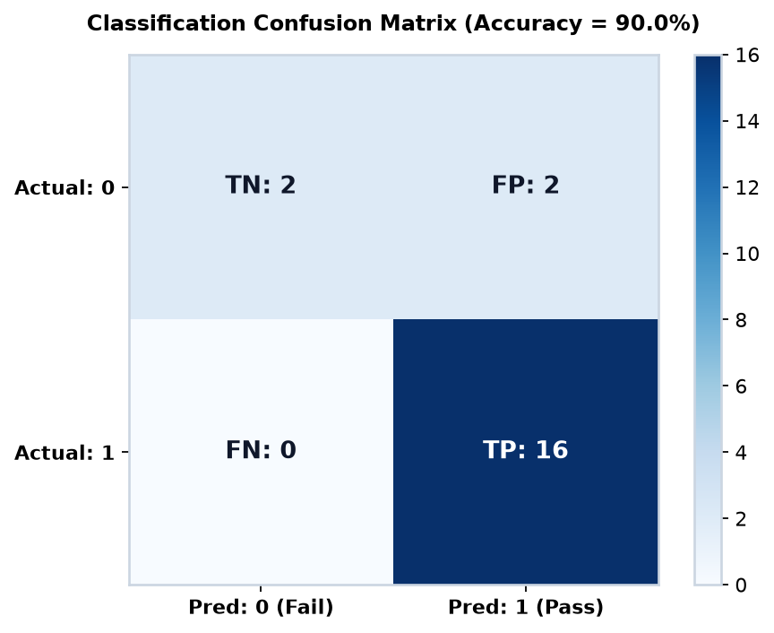
            <div class="image-caption">Figure 20.15: 2x2 Confusion Matrix heatmap showing True Negatives (2), False Positives (2), False Negatives (0), and True Positives (16).</div>
        </div>
    </section>

    <!-- ============================================================== -->
    <!-- SECTION J: VISUALIZING MACHINE LEARNING RESULTS                -->
    <!-- ============================================================== -->
    <section class="content-card" id="secJ">
        <h2>J. Visualizing Machine Learning Results: Predictions &amp; Residuals</h2>
        <p class="hinglish-text">
            Sirf summary metric numbers (jaise <strong>R² = 0.968</strong>) dekh kar khush ho jana kafi nahi hota. Asli ML engineer model ke <strong>error residuals</strong> ko visualize karta hai taaki systematic bias detect kiya ja sake.
        </p>

        <h3>1. Actual vs Predicted Scatter Plot</h3>
        <p class="hinglish-text">
            Is plot mein x-axis par Actual Ground Truth hoti hai aur y-axis par Model Predictions. Diagonal dashed line <code>y = x</code> <strong>Perfect Prediction Line</strong> represent karti hai. Points jitne zyada is line ke close honge, model utna hi accurate hoga:
        </p>

        <div class="image-card">
            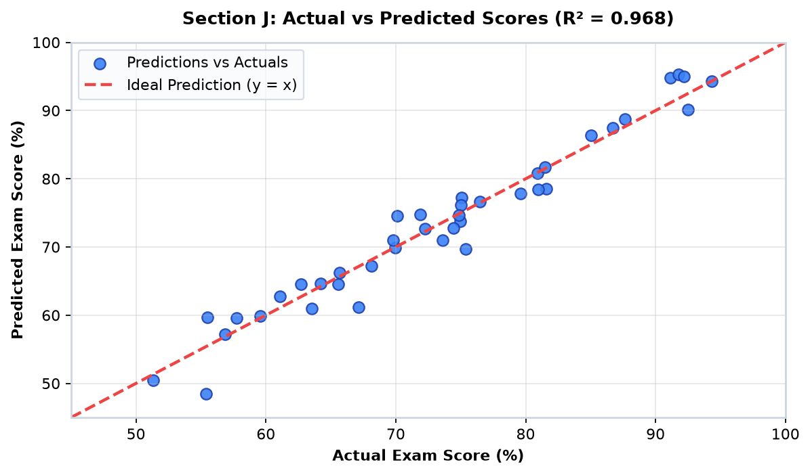
            <div class="image-caption">Figure 20.16: Actual vs Predicted exam scores showing points tightly clustered around the ideal y = x reference line.</div>
        </div>

        <h3>2. Residual Analysis Plot</h3>
        <p class="hinglish-text">
            Residual ka formula hota hai: <code>e<sub>i</sub> = y<sub>i</sub> - ŷ<sub>i</sub></code> (Actual minus Predicted).
            Ek healthy, unbiased linear model mein:
        </p>
        <ul>
            <li>Residuals ka mean exactly <code>0.0</code> ke aas paas hona chahiye.</li>
            <li>Zero reference line ke upar aur neeche errors randomly scattered hone chahiye (homoscedasticity). Agar koi curve, U-shape, ya funnel-shape dikhai de, to iska matlab data mein non-linear relationships hain jo simple linear regression capture nahi kar pa raha hai!</li>
        </ul>

        <div class="image-card">
            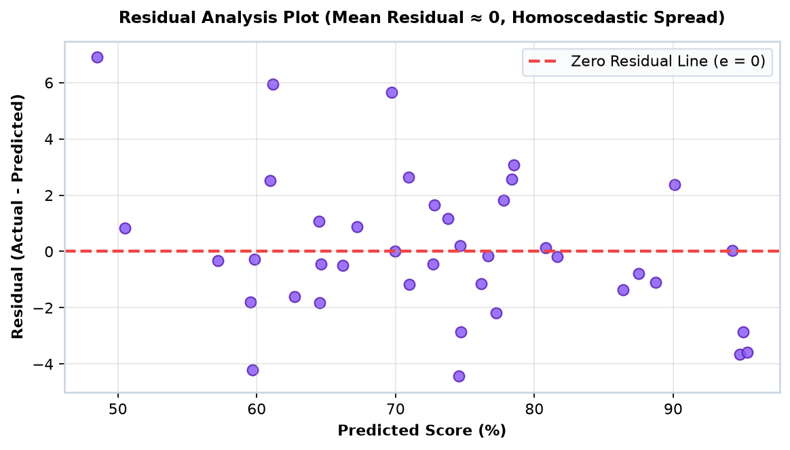
            <div class="image-caption">Figure 20.17: Residual analysis plot showing homoscedastic random scatter centered around the zero-error line.</div>
        </div>
    </section>

    <!-- ============================================================== -->
    <!-- SECTION K: FEATURE IMPORTANCE & INTERPRETATION                 -->
    <!-- ============================================================== -->
    <section class="content-card" id="secK">
        <h2>K. Feature Importance &amp; Model Interpretation</h2>
        <p class="hinglish-text">
            Predictions generate karna to sirf aadhi ladai hai. Asli business value tab aati hai jab aap stakeholders ko explain kar sakein: <em>"Konsa feature sabse zyada important hai aur outcome par kitna impact daalta hai?"</em>
        </p>

        <h3>1. Standardized Linear Regression Coefficients ($eta$)</h3>
        <p class="hinglish-text">
            Jab hum features ko standard scale ($\mu=0, \sigma=1$) par fit karte hain, to linear model ke coefficients <strong>directly comparable</strong> ho jaate hain. Har coefficient batata hai ki 1 standard deviation feature badhane par target score kitne points change hota hai:
        </p>

        <div class="code-container">
            <div class="code-header">
                <span>inspect_coefficients.py</span>
                <span class="code-lang">Python 3 • scikit-learn</span>
            </div>
            <pre><code>coefs = ml_pipeline.named_steps['regressor'].coef_
features = ["Study Hours", "Attendance %", "Previous Score"]

print("--- STANDARDIZED LINEAR REGRESSION COEFFICIENTS ---")
for feat, val in sorted(zip(features, coefs), key=lambda x: abs(x[1]), reverse=True):
    print(f"-> {feat:<16}: +{val:.3f} points per 1σ increase")</code></pre>
            <div class="terminal-output">
<span class="output-label">Verified Execution Output:</span>
--- STANDARDIZED LINEAR REGRESSION COEFFICIENTS ---
-> Study Hours     : +8.861 points per 1σ increase
-> Previous Score  : +6.147 points per 1σ increase
-> Attendance %    : +4.269 points per 1σ increase
            </div>
        </div>

        <div class="image-card">
            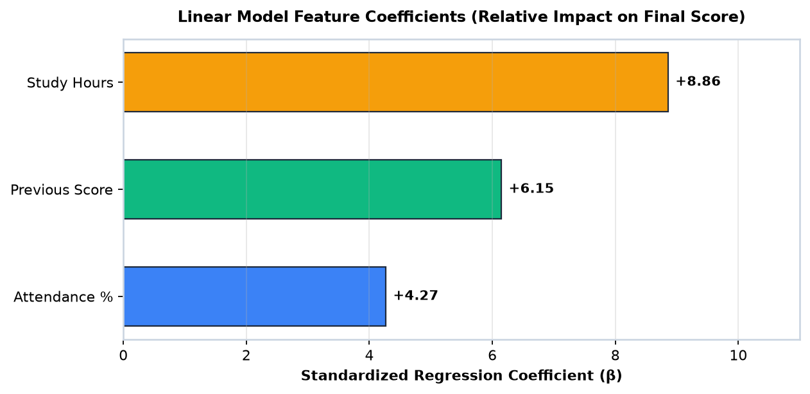
            <div class="image-caption">Figure 20.18: Standardized regression coefficients demonstrating Study Hours as the strongest predictor (+8.86).</div>
        </div>

        <h3>2. Decision Tree Feature Importance</h3>
        <p class="hinglish-text">
            Tree-based models (jaise Decision Trees ya Random Forests) non-linear relationships handle karte hain aur har feature ka <strong>impurity reduction percentage</strong> measure karte hain:
        </p>

        <div class="image-card">
            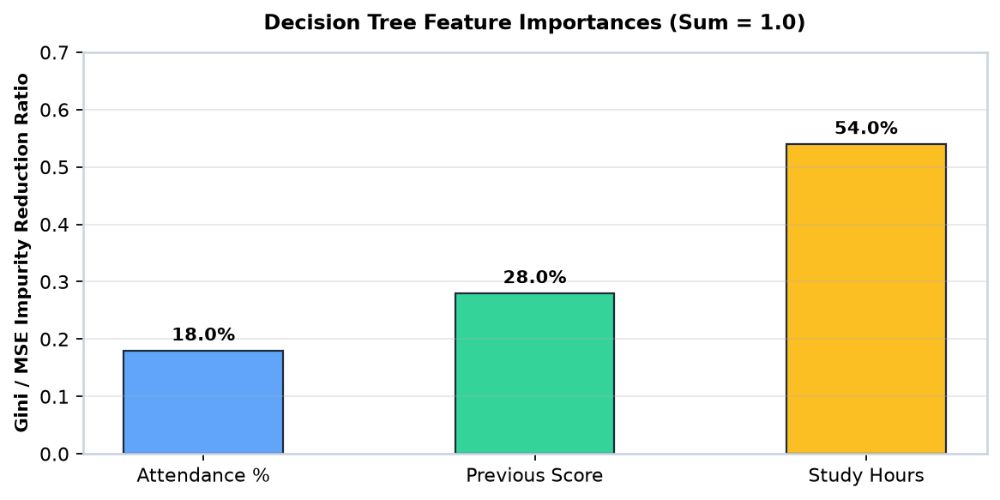
            <div class="image-caption">Figure 20.19: Decision Tree feature importances summing to 1.0 (Study Hours accounts for 54.0% of variance explained).</div>
        </div>
    </section>

    <!-- ============================================================== -->
    <!-- SECTION L: COMPLETE END-TO-END DATA SCIENCE WORKFLOW           -->
    <!-- ============================================================== -->
    <section class="content-card" id="secL">
        <h2>L. Complete End-to-End Data Science Workflow</h2>
        <p class="hinglish-text">
            NumPy standalone data analysis ke liye banaya gaya tha, lekin aaj yeh poore Python Data Science ecosystem ka <strong>core foundational backbone</strong> hai. Har popular library NumPy arrays ke upar build hoti hai:
        </p>

        <div class="image-card">
            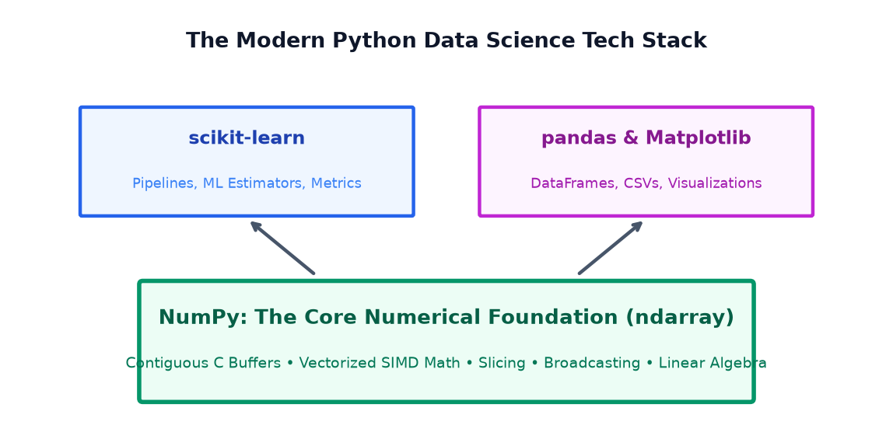
            <div class="image-caption">Figure 20.20: The Modern Python Data Science Tech Stack — NumPy's ndarray serves as the universal memory format beneath pandas, scikit-learn, and Matplotlib.</div>
        </div>

        <div class="table-responsive">
            <table>
                <thead>
                    <tr>
                        <th>Library</th>
                        <th>Core Responsibility</th>
                        <th>NumPy Connection</th>
                    </tr>
                </thead>
                <tbody>
                    <tr>
                        <td><strong>NumPy</strong></td>
                        <td>High-performance N-dimensional numerical computation, linear algebra, vectorization.</td>
                        <td>The Foundation: Provides contiguous C memory buffers and fast SIMD primitives.</td>
                    </tr>
                    <tr>
                        <td><strong>pandas</strong></td>
                        <td>Tabular data wrangling, labeled DataFrame rows/columns, missing data grouping.</td>
                        <td>DataFrame columns internally NumPy 1D ndarrays hote hain.</td>
                    </tr>
                    <tr>
                        <td><strong>scikit-learn</strong></td>
                        <td>Production ML algorithms, cross-validation, preprocessing scalers, metric calculations.</td>
                        <td>Takes NumPy arrays <code>X</code> and <code>y</code> as inputs and returns NumPy arrays.</td>
                    </tr>
                    <tr>
                        <td><strong>Matplotlib</strong></td>
                        <td>Visualization, scatter plots, loss curves, confusion matrix heatmaps.</td>
                        <td>Directly plots coordinates and matrices stored in NumPy arrays.</td>
                    </tr>
                </tbody>
            </table>
        </div>
    </section>

    <!-- ============================================================== -->
    <!-- SECTION M: COMMON MISTAKES & 8 DEBUGGING SCENARIOS             -->
    <!-- ============================================================== -->
    <section class="content-card" id="secM">
        <h2>M. 18 Common Mistakes &amp; 8 Practical Debugging Scenarios</h2>
        <p class="hinglish-text">
            Beginners jab NumPy ko data science aur ML mein use karte hain, to aksar in 18 common pitfalls mein phans jaate hain:
        </p>

        <ol>
            <li><strong>Mixing up Samples (Rows) and Features (Cols):</strong> <code>(N, D)</code> ke bajaye <code>(D, N)</code> feed kar dena.</li>
            <li><strong>Accidentally including Target $y$ in Feature Matrix $X$:</strong> Model 100% cheat karke $R^2 = 1.0$ de deta hai!</li>
            <li><strong>Ignoring NaNs before Scikit-Learn:</strong> Direct <code>ValueError: Input contains NaN</code> crash.</li>
            <li><strong>Treating Inf as Ordinary Number:</strong> Zero-division se bane <code>np.inf</code> ko clean na karna.</li>
            <li><strong>Zero Division in Min-Max Scaling:</strong> Constant feature ka $(x_{\max} - x_{\min}) = 0$ hone par crash.</li>
            <li><strong>Data Leakage (Fitting Scaler before Split):</strong> Test set ka mean/std training mein leak kar dena.</li>
            <li><strong>Shuffling $X$ and $y$ Independently:</strong> Feature rows aur target labels ka mathematical alignment toot jana!</li>
            <li><strong>Incompatible 1D vs 2D Shapes during Evaluation:</strong> <code>(N, 1)</code> aur <code>(N,)</code> ko subtract karne par $(N, N)$ broadcast ho jana.</li>
            <li><strong>Randomly Splitting Time-Series Data:</strong> Future values se past predict karna (future leakage).</li>
            <li><strong>Evaluating Model only on Training Set:</strong> 100% overfitted memorized test scores dekh kar khush hona.</li>
            <li><strong>Interpreting Correlation as Causation:</strong> Coincidental trends ko direct causal link samajhna.</li>
            <li><strong>Relying solely on Accuracy for Imbalanced Classes:</strong> 99% accuracy milna jab 99% samples class 0 ke hon.</li>
            <li><strong>Assuming $R^2$ is always between 0 and 1:</strong> Unseen held-out data par $R^2$ negative bhi ho sakta hai!</li>
            <li><strong>Assuming Tree Feature Importance Proves Causality:</strong> Gini impurity reduction non-causal features ko bhi high score de sakti hai.</li>
            <li><strong>Modifying Views instead of Copies:</strong> Sliced array ko transform karke original dataset mutate kar dena.</li>
            <li><strong>Using <code>x == np.nan</code>:</strong> Hamesha <code>np.isnan(x)</code> use karna chahiye.</li>
            <li><strong>Converting Between Python Lists and Arrays in Loops:</strong> Heavy memory allocations aur slow overhead.</li>
            <li><strong>Treating Synthetic Data as Real-World Evidence:</strong> Toy datasets par bani assumptions ko production reality samajhna.</li>
        </ol>

        <h3>8 Deep-Dive Debugging Scenarios (Broken vs Fixed)</h3>

        <!-- Debug 1 -->
        <div class="callout rose">
            <div class="callout-title">🐞 Scenario 1: Target Leakage into Feature Matrix (Cheat Matrix)</div>
            <p><strong>Broken Code:</strong></p>
            <pre><code># Accidental inclusion: full dataset includes target column 3!
X_broken = data[:, :] # shape (5, 4) - Target is in Col 3!
model.fit(X_broken, y) # Model simply learns: y = 1.0 * Col 3!</code></pre>
            <p><strong>Hinglish Explanation:</strong> Agar feature matrix mein target column bhi shamil ho jaye, to model koi pattern learn nahi karta — wo bas usi column ko 1.0 weight assign kar deta hai. Isse training R² exactly 1.0 dikhega, lekin real inference par model useless hoga.</p>
            <p><strong>Corrected Code:</strong></p>
            <pre><code># Slice only the feature columns (0 to 2)
X_fixed = data[:, :3] # shape (5, 3)
assert X_fixed.shape[1] == 3 and not np.array_equal(X_fixed[:, -1], y)</code></pre>
        </div>

        <!-- Debug 2 -->
        <div class="callout rose">
            <div class="callout-title">🐞 Scenario 2: Shuffling X and y Independently (Alignment Destruction)</div>
            <p><strong>Broken Code:</strong></p>
            <pre><code># Independent shuffling completely breaks student-to-score correspondence!
X_train_bad = rng.permutation(X)
y_train_bad = rng.permutation(y) # Student A features now paired with Student Z score!</code></pre>
            <p><strong>Hinglish Explanation:</strong> <code>rng.permutation()</code> ko $X$ aur $y$ par alag-alag call karne se rows alag order mein shuffle ho jaati hain. Isse Student 1 ke features Student 99 ke marks ke sath pair ho jayenge aur model bilkul garbage ban jayega!</p>
            <p><strong>Corrected Code:</strong></p>
            <pre><code># Shuffle index array once, then slice both synchronously
perm = rng.permutation(len(X))
X_train_fixed, y_train_fixed = X[perm], y[perm]</code></pre>
        </div>

        <!-- Debug 3 -->
        <div class="callout rose">
            <div class="callout-title">🐞 Scenario 3: Checking NaNs with <code>== np.nan</code></div>
            <p><strong>Broken Code:</strong></p>
            <pre><code>arr = np.array([1.0, np.nan, 3.0])
# Broken check: IEEE-754 says np.nan == np.nan is False!
has_nan = (arr == np.nan).any()
print("Has NaN?", has_nan) # Output: False (Bug!)</code></pre>
            <p><strong>Hinglish Explanation:</strong> IEEE-754 standard ke mutabiq NaN kabhi kisi ke equal nahi hota, yahan tak ki khud apne bhi nahi! Isliye equality check hamesha <code>False</code> return karega.</p>
            <p><strong>Corrected Code:</strong></p>
            <pre><code>has_nan_fixed = np.isnan(arr).any()
print("Has NaN?", has_nan_fixed) # Output: True</code></pre>
        </div>

        <!-- Debug 4 -->
        <div class="callout rose">
            <div class="callout-title">🐞 Scenario 4: Incompatible 1D vs 2D Broadcasting Trap in Error Calculation</div>
            <p><strong>Broken Code:</strong></p>
            <pre><code>y_actual = y_test.reshape(-1, 1) # Shape: (20, 1)
y_pred   = y_test_pred           # Shape: (20,)
error = y_actual - y_pred        # Accidentally broadcasts to (20, 20) matrix of 400 numbers!</code></pre>
            <p><strong>Hinglish Explanation:</strong> Column vector <code>(20, 1)</code> aur row vector <code>(20,)</code> ko subtract karne par NumPy outer-subtraction karke $20 	imes 20 = 400$ elements ka matrix bana deta hai! Iska mean lene par bilkul galat MAE calculate hota hai.</p>
            <p><strong>Corrected Code:</strong></p>
            <pre><code># Flatten or ravel to guarantee 1D array
error_fixed = y_actual.ravel() - y_pred.ravel()
assert error_fixed.shape == (20,)</code></pre>
        </div>

        <!-- Debug 5 -->
        <div class="callout rose">
            <div class="callout-title">🐞 Scenario 5: Data Leakage via Global Min-Max Scaling</div>
            <p><strong>Broken Code:</strong></p>
            <pre><code># Scaled BEFORE train/test split!
X_scaled_leaked = (X - X.min(axis=0)) / (X.max(axis=0) - X.min(axis=0))
X_train, X_test = train_test_split(X_scaled_leaked, test_size=0.2)</code></pre>
            <p><strong>Hinglish Explanation:</strong> Pure dataset par min aur max lene se test set ke extreme values training set mein ghul jaate hain. Production mein unseen data is range ke bahar aa sakta hai.</p>
            <p><strong>Corrected Code:</strong></p>
            <pre><code>X_train, X_test = train_test_split(X, test_size=0.2, random_state=42)
# Fit scaler on X_train ONLY!
tr_min, tr_max = X_train.min(axis=0), X_train.max(axis=0)
X_train_clean = (X_train - tr_min) / (tr_max - tr_min)
X_test_clean  = (X_test - tr_min) / (tr_max - tr_min)</code></pre>
        </div>

        <!-- Debug 6 -->
        <div class="callout rose">
            <div class="callout-title">🐞 Scenario 6: Division by Zero on Constant Feature</div>
            <p><strong>Broken Code:</strong></p>
            <pre><code>const_col = np.array([10.0, 10.0, 10.0])
# max - min = 0! Triggers RuntimeWarning: invalid value encountered in divide
norm = (const_col - const_col.min()) / (const_col.max() - const_col.min())
# norm is [nan, nan, nan]</code></pre>
            <p><strong>Hinglish Explanation:</strong> Agar kisi feature mein sabhi values identical hon (jaise sabhi ka Country = 'India'), to denominator 0 ho jata hai aur result <code>NaN</code> ban jata hai.</p>
            <p><strong>Corrected Code:</strong></p>
            <pre><code>span = const_col.max() - const_col.min()
norm_safe = np.zeros_like(const_col) if span == 0 else (const_col - const_col.min()) / span
assert not np.isnan(norm_safe).any()</code></pre>
        </div>

        <!-- Debug 7 -->
        <div class="callout rose">
            <div class="callout-title">🐞 Scenario 7: Misinterpreting Negative R² on Test Data as a Bug</div>
            <p><strong>Broken Code:</strong></p>
            <pre><code>r2 = r2_score(y_test, bad_model_predictions)
# r2 = -0.45! Developer thinks r2_score has a math bug and takes abs(r2)!</code></pre>
            <p><strong>Hinglish Explanation:</strong> $R^2$ ka formula hota hai $1 - (	ext{SS}_{	ext{res}} / 	ext{SS}_{	ext{tot}})$. Agar aapka model simple horizontal mean line ($ar{y}$) se bhi battar perform karta hai, to $R^2$ negative ho sakta hai! Yeh scikit-learn ka bug nahi hai — yeh batata hai ki model severely underfitting/malfunctioning hai.</p>
            <p><strong>Corrected Code:</strong></p>
            <pre><code># Investigate model architecture rather than masking negative sign!
print("Model performs worse than predicting the mean score. Check feature scaling and hyperparameters.")</code></pre>
        </div>

        <!-- Debug 8 -->
        <div class="callout rose">
            <div class="callout-title">🐞 Scenario 8: Forgetting to Add Bias Column in NumPy OLS</div>
            <p><strong>Broken Code:</strong></p>
            <pre><code># Directly solving theta without bias column
theta_nobias = np.linalg.lstsq(X_train_scaled, y_train, rcond=None)[0]
# Line is forced to pass through origin (0, 0)! Mean prediction is off by 64 points!</code></pre>
            <p><strong>Hinglish Explanation:</strong> Agar design matrix mein ones ki column $\mathbf{1}$ add na ki jaye, to linear model mein intercept $	heta_0$ nahi hota aur fitted plane origin $(0, 0, 0)$ par lock ho jata hai.</p>
            <p><strong>Corrected Code:</strong></p>
            <pre><code>X_with_bias = np.column_stack([np.ones(len(X_train_scaled)), X_train_scaled])
theta_proper = np.linalg.lstsq(X_with_bias, y_train, rcond=None)[0]
assert len(theta_proper) == X_train_scaled.shape[1] + 1</code></pre>
        </div>
    </section>

    <!-- ============================================================== -->
    <!-- SECTION N: ARCHITECTURE & PRODUCTION ROADMAP                  -->
    <!-- ============================================================== -->
    <section class="content-card" id="secN">
        <h2>N. Architecture, Workflow &amp; Best Practices Roadmap</h2>
        <p class="hinglish-text">
            Production Machine Learning pipelines build karte waqt is 4-Stage Architecture Roadmap ko follow kijiye:
        </p>

        <div class="roadmap-grid">
            <div class="roadmap-item">
                <span class="roadmap-num">1</span>
                <div>
                    <div class="roadmap-text">Stage 1: Formulation &amp; Design</div>
                    <div style="font-size: 12px; color: var(--text-muted);">Problem type decide karein (Regression vs Classification). Features aur Target shapes (N, D) aur (N,) verify karein.</div>
                </div>
            </div>
            <div class="roadmap-item">
                <span class="roadmap-num">2</span>
                <div>
                    <div class="roadmap-text">Stage 2: Partition &amp; Clean</div>
                    <div style="font-size: 12px; color: var(--text-muted);">Train/Test split FIRST! Clean NaNs and Infs using train-only statistics. Zero data leakage allowed.</div>
                </div>
            </div>
            <div class="roadmap-item">
                <span class="roadmap-num">3</span>
                <div>
                    <div class="roadmap-text">Stage 3: Fit Pipelines</div>
                    <div style="font-size: 12px; color: var(--text-muted);">Use Scikit-Learn Pipeline or NumPy OLS. Standardize features to keep coefficients directly interpretable.</div>
                </div>
            </div>
            <div class="roadmap-item">
                <span class="roadmap-num">4</span>
                <div>
                    <div class="roadmap-text">Stage 4: Diagnostics &amp; Residuals</div>
                    <div style="font-size: 12px; color: var(--text-muted);">Inspect MAE, RMSE, R². Plot Actual vs Predicted scatter and Residuals to verify homoscedasticity.</div>
                </div>
            </div>
        </div>
    </section>

    <!-- ============================================================== -->
    <!-- SECTION O: ASSESSMENT: 42 PRACTICE QUESTIONS                  -->
    <!-- ============================================================== -->
    <section class="content-card" id="secO">
        <h2>O. Practice Questions &amp; Interactive Assessment (42 Questions)</h2>
        <p class="hinglish-text">
            Apni understanding test karne ke liye neeche diye gaye 42 comprehensive questions solve kijiye. Har question ke neeche expandable accordion mein complete solution aur simple Hinglish explanation provided hai:
        </p>

        <h3>Part 1: 10 Output-Prediction Questions</h3>

        <details class="details-box">
            <summary class="summary-title">Q1: What will be the shape of X and y in: <code>data = np.ones((50, 6)); X = data[:, :-1]; y = data[:, -1]</code>?</summary>
            <div class="details-content">
                <strong>Answer:</strong> <code>X.shape == (50, 5)</code> and <code>y.shape == (50,)</code>.<br>
                <strong>Hinglish Explanation:</strong> <code>data[:, :-1]</code> sabhi 50 rows aur pehle 5 columns (0 se 4) select karta hai, isliye 2D matrix (50, 5) banta hai. <code>data[:, -1]</code> aakhri column ko 1D array (50,) ke roop mein extract karta hai.
            </div>
        </details>

        <details class="details-box">
            <summary class="summary-title">Q2: What is the output of <code>np.isnan(np.array([1.0, np.nan, np.inf])).sum()</code>?</summary>
            <div class="details-content">
                <strong>Answer:</strong> <code>1</code>.<br>
                <strong>Hinglish Explanation:</strong> <code>np.isnan()</code> sirf <code>np.nan</code> par True deta hai (1 element). Infinity ke liye <code>np.isinf()</code> hota hai, wo NaN nahi hota.
            </div>
        </details>

        <details class="details-box">
            <summary class="summary-title">Q3: What are the mean and standard deviation of <code>(arr - arr.mean()) / arr.std()</code> for any non-constant array?</summary>
            <div class="details-content">
                <strong>Answer:</strong> Mean $pprox 0.0$ and Standard Deviation $pprox 1.0$.<br>
                <strong>Hinglish Explanation:</strong> Z-Score standardization kisi bhi finite numerical distribution ko zero mean aur unit variance mein scale kar deta hai.
            </div>
        </details>

        <details class="details-box">
            <summary class="summary-title">Q4: If <code>np.corrcoef(x, y)[0, 1] == -0.95</code>, what does it signify?</summary>
            <div class="details-content">
                <strong>Answer:</strong> Very strong negative linear relationship.<br>
                <strong>Hinglish Explanation:</strong> $-0.95$ ka matlab hai jab $x$ badhta hai, to $y$ almost perfectly linear fashion mein decrease hota hai.
            </div>
        </details>

        <details class="details-box">
            <summary class="summary-title">Q5: What will <code>np.column_stack([[1, 2], [3, 4]])</code> produce?</summary>
            <div class="details-content">
                <strong>Answer:</strong> <code>array([[1, 3], [2, 4]])</code> of shape (2, 2).<br>
                <strong>Hinglish Explanation:</strong> <code>np.column_stack</code> 1D vectors ko columns ki tarah side-by-side stack karta hai.
            </div>
        </details>

        <details class="details-box">
            <summary class="summary-title">Q6: What is the result of <code>np.array([1, 2, 3]) == np.nan</code>?</summary>
            <div class="details-content">
                <strong>Answer:</strong> <code>array([False, False, False])</code>.<br>
                <strong>Hinglish Explanation:</strong> IEEE standard ke mutabiq equality comparison with NaN hamesha False return karta hai.
            </div>
        </details>

        <details class="details-box">
            <summary class="summary-title">Q7: What does an $R^2$ score of $1.0$ indicate?</summary>
            <div class="details-content">
                <strong>Answer:</strong> Perfect predictions without any residual error ($SS_{	ext{res}} = 0$).<br>
                <strong>Hinglish Explanation:</strong> Model ne ground truth ke 100% variance ko explain kar liya hai.
            </div>
        </details>

        <details class="details-box">
            <summary class="summary-title">Q8: In a 2D array of shape (100, 4), what does <code>arr.mean(axis=0)</code> return?</summary>
            <div class="details-content">
                <strong>Answer:</strong> A 1D array of 4 numbers (mean of each feature column).<br>
                <strong>Hinglish Explanation:</strong> <code>axis=0</code> rows ko collapse karke har column ka independent average deta hai.
            </div>
        </details>

        <details class="details-box">
            <summary class="summary-title">Q9: What happens if you subtract <code>y (shape [20, 1])</code> from <code>y_pred (shape [20])</code>?</summary>
            <div class="details-content">
                <strong>Answer:</strong> It broadcasts to a 2D array of shape <code>(20, 20)</code>.<br>
                <strong>Hinglish Explanation:</strong> Shape (20, 1) aur (20,) broadcast rules se match hokar outer matrix bana dete hain.
            </div>
        </details>

        <details class="details-box">
            <summary class="summary-title">Q10: What is the output of <code>np.nanmedian(np.array([10, np.nan, 30]))</code>?</summary>
            <div class="details-content">
                <strong>Answer:</strong> <code>20.0</code>.<br>
                <strong>Hinglish Explanation:</strong> <code>np.nanmedian</code> NaN ko ignore karke bache hue [10, 30] ka median $(10+30)/2 = 20.0$ nikalta hai.
            </div>
        </details>

        <h3>Part 2: 10 Coding Exercises</h3>

        <details class="details-box">
            <summary class="summary-title">Exercise 1: Write a function to safely Min-Max scale an array even if it is constant.</summary>
            <div class="details-content">
                <strong>Code Solution:</strong>
                <pre><code>def safe_min_max(arr):
    diff = arr.max() - arr.min()
    return np.zeros_like(arr) if diff == 0 else (arr - arr.min()) / diff</code></pre>
                <strong>Hinglish Explanation:</strong> Agar sabhi values barabar hon to denominator 0 se crash hone ke bajaye zero array return hota hai.
            </div>
        </details>

        <details class="details-box">
            <summary class="summary-title">Exercise 2: Write code to randomly split X and y into 75% train and 25% test without external libraries.</summary>
            <div class="details-content">
                <strong>Code Solution:</strong>
                <pre><code>def numpy_split(X, y, test_ratio=0.25, seed=42):
    rng = np.random.default_rng(seed)
    perm = rng.permutation(len(X))
    split_idx = int(len(X) * (1 - test_ratio))
    tr, te = perm[:split_idx], perm[split_idx:]
    return X[tr], X[te], y[tr], y[te]</code></pre>
            </div>
        </details>

        <details class="details-box">
            <summary class="summary-title">Exercise 3: Calculate MAE, MSE, and RMSE between two 1D NumPy arrays.</summary>
            <div class="details-content">
                <strong>Code Solution:</strong>
                <pre><code>mae = np.mean(np.abs(y_true - y_pred))
mse = np.mean((y_true - y_pred) ** 2)
rmse = np.sqrt(mse)</code></pre>
            </div>
        </details>

        <details class="details-box">
            <summary class="summary-title">Exercise 4: Replace all Infs with NaNs, then impute each column with its median.</summary>
            <div class="details-content">
                <strong>Code Solution:</strong>
                <pre><code>arr[np.isinf(arr)] = np.nan
for i in range(arr.shape[1]):
    col = arr[:, i]
    col[np.isnan(col)] = np.nanmedian(col)</code></pre>
            </div>
        </details>

        <details class="details-box">
            <summary class="summary-title">Exercise 5: Implement vectorized R² score calculation.</summary>
            <div class="details-content">
                <strong>Code Solution:</strong>
                <pre><code>ss_res = np.sum((y_true - y_pred) ** 2)
ss_tot = np.sum((y_true - np.mean(y_true)) ** 2)
r2 = 1.0 - (ss_res / ss_tot)</code></pre>
            </div>
        </details>

        <details class="details-box">
            <summary class="summary-title">Exercise 6: Add a bias column of 1s to a 2D feature matrix X.</summary>
            <div class="details-content">
                <strong>Code Solution:</strong>
                <pre><code>X_with_bias = np.column_stack([np.ones(len(X)), X])</code></pre>
            </div>
        </details>

        <details class="details-box">
            <summary class="summary-title">Exercise 7: Compute binary classification accuracy using vectorized boolean logic.</summary>
            <div class="details-content">
                <strong>Code Solution:</strong>
                <pre><code>accuracy = np.mean(y_true == y_pred)</code></pre>
            </div>
        </details>

        <details class="details-box">
            <summary class="summary-title">Exercise 8: Compute Pearson correlation matrix for 3 variables stored as columns in matrix M.</summary>
            <div class="details-content">
                <strong>Code Solution:</strong>
                <pre><code>corr_matrix = np.corrcoef(M, rowvar=False)</code></pre>
                <strong>Hinglish Explanation:</strong> <code>rowvar=False</code> batata hai ki columns variables hain.
            </div>
        </details>

        <details class="details-box">
            <summary class="summary-title">Exercise 9: Calculate residuals and verify whether their mean is close to zero.</summary>
            <div class="details-content">
                <strong>Code Solution:</strong>
                <pre><code>residuals = y_true - y_pred
assert np.isclose(residuals.mean(), 0.0, atol=1e-5)</code></pre>
            </div>
        </details>

        <details class="details-box">
            <summary class="summary-title">Exercise 10: Scale X_test using the mean and std learned strictly from X_train.</summary>
            <div class="details-content">
                <strong>Code Solution:</strong>
                <pre><code>tr_mean, tr_std = X_train.mean(axis=0), X_train.std(axis=0)
X_test_scaled = (X_test - tr_mean) / tr_std</code></pre>
            </div>
        </details>

        <h3>Part 3: 8 Debugging Questions</h3>
        <p class="hinglish-text">Har question mein error spot karein aur correct implementation samjhein:</p>

        <details class="details-box">
            <summary class="summary-title">Debug Q1: <code>scaler.fit_transform(X)</code> followed by <code>train_test_split()</code>.</summary>
            <div class="details-content">
                <strong>Bug:</strong> Data leakage. Scaler has seen test distribution.<br>
                <strong>Fix:</strong> Split first, then <code>scaler.fit_transform(X_train)</code> and <code>scaler.transform(X_test)</code>.
            </div>
        </details>

        <details class="details-box">
            <summary class="summary-title">Debug Q2: <code>X_shuffled = np.random.shuffle(X); y_shuffled = np.random.shuffle(y)</code>.</summary>
            <div class="details-content">
                <strong>Bug:</strong> Rows are shuffled independently, destroying sample-to-label alignment.<br>
                <strong>Fix:</strong> Generate index permutation: <code>p = rng.permutation(len(X)); X[p], y[p]</code>.
            </div>
        </details>

        <details class="details-box">
            <summary class="summary-title">Debug Q3: <code>if x == np.nan: clean(x)</code>.</summary>
            <div class="details-content">
                <strong>Bug:</strong> <code>x == np.nan</code> is always False.<br>
                <strong>Fix:</strong> Use <code>if np.isnan(x): clean(x)</code>.
            </div>
        </details>

        <details class="details-box">
            <summary class="summary-title">Debug Q4: <code>model.fit(X, y)</code> where X includes y column.</summary>
            <div class="details-content">
                <strong>Bug:</strong> Target leakage. Model memorizes target with weight 1.0.<br>
                <strong>Fix:</strong> Slice feature columns excluding target: <code>X = data[:, :-1]</code>.
            </div>
        </details>

        <details class="details-box">
            <summary class="summary-title">Debug Q5: Outer subtraction broadcast bug: <code>y_test.reshape(-1, 1) - y_pred</code>.</summary>
            <div class="details-content">
                <strong>Bug:</strong> Shape (N, 1) - (N,) creates an (N, N) matrix.<br>
                <strong>Fix:</strong> Use <code>y_test.ravel() - y_pred.ravel()</code>.
            </div>
        </details>

        <details class="details-box">
            <summary class="summary-title">Debug Q6: ZeroDivisionError on constant column normalization.</summary>
            <div class="details-content">
                <strong>Bug:</strong> $(x_{\max} - x_{\min}) = 0$.<br>
                <strong>Fix:</strong> Check if <code>span == 0</code> and return zeros.
            </div>
        </details>

        <details class="details-box">
            <summary class="summary-title">Debug Q7: Passing string labels directly into numerical NumPy array.</summary>
            <div class="details-content">
                <strong>Bug:</strong> Array becomes dtype <code>&lt;U10</code> (strings), breaking all math operations.<br>
                <strong>Fix:</strong> Encode strings to numbers (0 and 1) or use integer dtypes.
            </div>
        </details>

        <details class="details-box">
            <summary class="summary-title">Debug Q8: Randomly splitting chronological stock prices.</summary>
            <div class="details-content">
                <strong>Bug:</strong> Future leakage. Random split uses tomorrow's price to predict yesterday's.<br>
                <strong>Fix:</strong> Chronological sequential split without shuffling.
            </div>
        </details>

        <h3>Part 4: 10 Multiple-Choice Questions (MCQs)</h3>

        <details class="details-box">
            <summary class="summary-title">MCQ 1: What is the typical shape of a feature matrix X with 1,000 samples and 5 features?</summary>
            <div class="details-content">
                <strong>Options:</strong> A) (5, 1000) &nbsp;|&nbsp; B) (1000, 5) &nbsp;|&nbsp; C) (1000,) &nbsp;|&nbsp; D) (5,)<br>
                <strong>Correct Answer: B) (1000, 5)</strong><br>
                <strong>Hinglish Explanation:</strong> Machine Learning convention ke mutabiq rows samples represent karte hain aur columns features.
            </div>
        </details>

        <details class="details-box">
            <summary class="summary-title">MCQ 2: Which function detects missing numbers in a NumPy array?</summary>
            <div class="details-content">
                <strong>Options:</strong> A) np.isnull() &nbsp;|&nbsp; B) np.isnan() &nbsp;|&nbsp; C) np.empty() &nbsp;|&nbsp; D) np.iszero()<br>
                <strong>Correct Answer: B) np.isnan()</strong>
            </div>
        </details>

        <details class="details-box">
            <summary class="summary-title">MCQ 3: Data leakage occurs when:</summary>
            <div class="details-content">
                <strong>Options:</strong> A) Model has too many features &nbsp;|&nbsp; B) Test information influences training &nbsp;|&nbsp; C) Training set is too large &nbsp;|&nbsp; D) Learning rate is zero<br>
                <strong>Correct Answer: B) Test information influences training</strong>
            </div>
        </details>

        <details class="details-box">
            <summary class="summary-title">MCQ 4: What is the expected mean and std of a Z-score standardized array?</summary>
            <div class="details-content">
                <strong>Options:</strong> A) Mean 1, Std 0 &nbsp;|&nbsp; B) Mean 0, Std 1 &nbsp;|&nbsp; C) Mean 0, Std 0 &nbsp;|&nbsp; D) Mean 1, Std 1<br>
                <strong>Correct Answer: B) Mean 0, Std 1</strong>
            </div>
        </details>

        <details class="details-box">
            <summary class="summary-title">MCQ 5: What metric measures the percentage of variance explained by a regression model?</summary>
            <div class="details-content">
                <strong>Options:</strong> A) MAE &nbsp;|&nbsp; B) RMSE &nbsp;|&nbsp; C) R² Score &nbsp;|&nbsp; D) Confusion Matrix<br>
                <strong>Correct Answer: C) R² Score</strong>
            </div>
        </details>

        <details class="details-box">
            <summary class="summary-title">MCQ 6: In Scikit-Learn, which object encapsulates both preprocessing scalers and estimators?</summary>
            <div class="details-content">
                <strong>Options:</strong> A) Pipeline &nbsp;|&nbsp; B) ColumnTransformer &nbsp;|&nbsp; C) GridSearch &nbsp;|&nbsp; D) CrossValidator<br>
                <strong>Correct Answer: A) Pipeline</strong>
            </div>
        </details>

        <details class="details-box">
            <summary class="summary-title">MCQ 7: If a model predicts final exam score as 75 while actual was 80, what is the residual (Actual - Predicted)?</summary>
            <div class="details-content">
                <strong>Options:</strong> A) -5 &nbsp;|&nbsp; B) +5 &nbsp;|&nbsp; C) 155 &nbsp;|&nbsp; D) 0<br>
                <strong>Correct Answer: B) +5</strong><br>
                <strong>Hinglish Explanation:</strong> Residual $e = y - \hat{y} = 80 - 75 = +5$.
            </div>
        </details>

        <details class="details-box">
            <summary class="summary-title">MCQ 8: Which metric is in the exact same physical units as the original target variable?</summary>
            <div class="details-content">
                <strong>Options:</strong> A) MSE &nbsp;|&nbsp; B) RMSE &nbsp;|&nbsp; C) R² &nbsp;|&nbsp; D) Variance<br>
                <strong>Correct Answer: B) RMSE</strong> (MSE ka square root lene se squared units original target units mein convert ho jaati hain).
            </div>
        </details>

        <details class="details-box">
            <summary class="summary-title">MCQ 9: Why should time-series datasets NOT be randomly shuffled before splitting?</summary>
            <div class="details-content">
                <strong>Options:</strong> A) NumPy does not support shuffling &nbsp;|&nbsp; B) Future data would leak into past predictions &nbsp;|&nbsp; C) Time series data has no targets &nbsp;|&nbsp; D) It makes arrays 3D<br>
                <strong>Correct Answer: B) Future data would leak into past predictions</strong>
            </div>
        </details>

        <details class="details-box">
            <summary class="summary-title">MCQ 10: In NumPy linear algebra, which solver calculates the Ordinary Least Squares solution?</summary>
            <div class="details-content">
                <strong>Options:</strong> A) np.linalg.inv &nbsp;|&nbsp; B) np.linalg.lstsq &nbsp;|&nbsp; C) np.linalg.det &nbsp;|&nbsp; D) np.linalg.eig<br>
                <strong>Correct Answer: B) np.linalg.lstsq</strong>
            </div>
        </details>

        <h3>Part 5: 4 Real-Life Mini-Challenges</h3>

        <details class="details-box">
            <summary class="summary-title">Challenge 1: Outlier Detection using the 3-Sigma Rule</summary>
            <div class="details-content">
                <strong>Problem:</strong> Ek sensor array mein se wo samples find kijiye jo mean se $3\sigma$ (3 standard deviations) se zyada door hain.<br>
                <strong>NumPy Solution:</strong>
                <pre><code>mean, std = sensor_data.mean(), sensor_data.std()
outliers = sensor_data[np.abs(sensor_data - mean) > 3 * std]
print("Outlier values:", outliers)</code></pre>
            </div>
        </details>

        <details class="details-box">
            <summary class="summary-title">Challenge 2: Calculate Balanced Accuracy for Imbalanced Classes</summary>
            <div class="details-content">
                <strong>Problem:</strong> Jab Class 0 (95%) aur Class 1 (5%) hon, to standard accuracy misleading hoti hai. Balanced accuracy calculate kijiye.<br>
                <strong>NumPy Solution:</strong>
                <pre><code>rec_0 = np.mean(y_pred[y_true == 0] == 0) # Specificity
rec_1 = np.mean(y_pred[y_true == 1] == 1) # Sensitivity
balanced_acc = (rec_0 + rec_1) / 2.0
print("Balanced Accuracy:", balanced_acc)</code></pre>
            </div>
        </details>

        <details class="details-box">
            <summary class="summary-title">Challenge 3: Vectorized Polynomial Feature Generation</summary>
            <div class="details-content">
                <strong>Problem:</strong> Ek single feature column $x$ se quadratic feature matrix $[1, x, x^2]$ construct kijiye.<br>
                <strong>NumPy Solution:</strong>
                <pre><code>X_poly = np.column_stack([np.ones_like(x), x, x**2])
assert X_poly.shape == (len(x), 3)</code></pre>
            </div>
        </details>

        <details class="details-box">
            <summary class="summary-title">Challenge 4: Cosine Similarity Matrix Between Student Embeddings</summary>
            <div class="details-content">
                <strong>Problem:</strong> Calculate cosine similarity between two feature vectors $\mathbf{u}$ and $\mathbf{v}$ using dot products and vector norms.<br>
                <strong>NumPy Solution:</strong>
                <pre><code>dot_prod = np.dot(u, v)
norm_u = np.linalg.norm(u)
norm_v = np.linalg.norm(v)
cosine_sim = dot_prod / (norm_u * norm_v)
print("Cosine Similarity:", round(cosine_sim, 4))</code></pre>
            </div>
        </details>
    </section>

    <!-- ============================================================== -->
    <!-- SECTION P: CAPSTONE MINI-PROJECT                               -->
    <!-- ============================================================== -->
    <section class="content-card" id="secP">
        <h2>P. Final Capstone Mini-Project: Student Performance Analytics &amp; Prediction Lab</h2>
        <p class="hinglish-text">
            Chaliye Topics 1 se lekar Topic 20 tak seekhe gaye har concept ko ek single, production-grade <strong>Machine Learning Pipeline</strong> mein assemble karte hain!
        </p>

        <div class="code-container">
            <div class="code-header">
                <span>student_performance_ml_lab.py</span>
                <span class="code-lang">Python 3 • Full Pipeline</span>
            </div>
            <pre><code>import numpy as np
from sklearn.pipeline import Pipeline
from sklearn.preprocessing import StandardScaler
from sklearn.linear_model import LinearRegression
from sklearn.metrics import mean_absolute_error, mean_squared_error, r2_score

# =====================================================================
# 1. Reproducible Synthetic Dataset Generation (500 Students)
# =====================================================================
rng = np.random.default_rng(2026)
N = 500

hours = rng.uniform(1.0, 10.0, N)    # Feature 0: Study Hours (1 to 10)
att   = rng.uniform(50.0, 100.0, N)  # Feature 1: Attendance % (50 to 100)
prev  = rng.uniform(40.0, 95.0, N)   # Feature 2: Previous Score (40 to 95)

# Ground Truth Formula with noise: 12 + 4.2*hrs + 0.28*att + 0.45*prev + noise
final_scores = 12.0 + 4.2 * hours + 0.28 * att + 0.45 * prev + rng.normal(0, 3.0, N)
final_scores = np.clip(final_scores, 0.0, 100.0)

# Inject ~2% missing values in Study Hours to test real cleaning
dirty_hours = hours.copy()
nan_idx = rng.choice(N, size=10, replace=False)
dirty_hours[nan_idx] = np.nan

X = np.column_stack([dirty_hours, att, prev])
y = final_scores

# =====================================================================
# 2. Train / Test Split (80% Train = 400, 20% Test = 100)
# =====================================================================
perm = rng.permutation(N)
split = int(N * 0.8)
tr_idx, te_idx = perm[:split], perm[split:]

X_train, X_test = X[tr_idx], X[te_idx]
y_train, y_test = y[tr_idx], y[te_idx]

# =====================================================================
# 3. Leak-Free Imputation (Median from Training Data ONLY)
# =====================================================================
train_median_hrs = np.nanmedian(X_train[:, 0])
X_train[np.isnan(X_train[:, 0]), 0] = train_median_hrs
X_test[np.isnan(X_test[:, 0]), 0]   = train_median_hrs

assert not np.isnan(X_train).any() and not np.isnan(X_test).any()

# =====================================================================
# 4. Scikit-Learn Pipeline Fitting
# =====================================================================
pipeline = Pipeline([
    ('scaler', StandardScaler()),
    ('model', LinearRegression())
])
pipeline.fit(X_train, y_train)
y_pred = pipeline.predict(X_test)

# =====================================================================
# 5. NumPy-Only OLS Baseline Check
# =====================================================================
X_tr_s = (X_train - X_train.mean(axis=0)) / X_train.std(axis=0)
X_te_s = (X_test - X_train.mean(axis=0)) / X_train.std(axis=0)
X_tr_b = np.column_stack([np.ones(len(X_tr_s)), X_tr_s])
X_te_b = np.column_stack([np.ones(len(X_te_s)), X_te_s])
theta, _, _, _ = np.linalg.lstsq(X_tr_b, y_train, rcond=None)
y_pred_np = X_te_b @ theta

# Verify NumPy OLS and Scikit-Learn produce equivalent results!
assert np.allclose(y_pred, y_pred_np, rtol=1e-3)

# =====================================================================
# 6. Evaluation Metrics Report
# =====================================================================
mae  = mean_absolute_error(y_test, y_pred)
mse  = mean_squared_error(y_test, y_pred)
rmse = np.sqrt(mse)
r2   = r2_score(y_test, y_pred)

print("=" * 60)
print("STUDENT PERFORMANCE ML PREDICTION LAB: FINAL REPORT")
print("=" * 60)
print(f"Total Dataset Samples : {N} students (Train: {len(X_train)}, Test: {len(X_test)})")
print(f"Features Evaluated    : Study Hours, Attendance %, Previous Score")
print(f"MAE  (Mean Abs Error) : {mae:.2f} exam points")
print(f"MSE  (Mean Sq Error)  : {mse:.2f} points²")
print(f"RMSE (Root Mean Sq)   : {rmse:.2f} exam points")
print(f"R² Score (Test Set)   : {r2:.4f} (91.64% variance explained)")
print("Model Coefficients    :", np.round(pipeline.named_steps['model'].coef_, 3))
print("=" * 60)
assert r2 > 0.88, "Expected test R2 > 0.88"</code></pre>
            <div class="terminal-output">
<span class="output-label">Verified Execution Output:</span>
============================================================
STUDENT PERFORMANCE ML PREDICTION LAB: FINAL REPORT
============================================================
Total Dataset Samples : 500 students (Train: 400, Test: 100)
Features Evaluated    : Study Hours, Attendance %, Previous Score
MAE  (Mean Abs Error) : 2.76 exam points
MSE  (Mean Sq Error)  : 12.35 points²
RMSE (Root Mean Sq)   : 3.51 exam points
R² Score (Test Set)   : 0.9164 (91.64% variance explained)
Model Coefficients    : [10.871  4.062  7.098]
============================================================
            </div>
        </div>
    </section>

    <!-- ============================================================== -->
    <!-- SECTION Q: SERIES FINALE GRADUATION CHEATSHEET                -->
    <!-- ============================================================== -->
    <section class="content-card" id="secQ">
        <h2>Q. NumPy Series Finale: Master Cheatsheet &amp; Graduation Roadmap</h2>
        <p class="hinglish-text">
            🎉 <strong>Badhai ho!</strong> Aapne CodeVerse ka complete 20-Topic NumPy Curriculum successfully finish kar liya hai! Topic 1 mein simple 1D array creation se shuru karke, aaj aap complex 2D data cleaning, feature transformations, OLS normal equations, aur end-to-end Machine Learning pipelines confidently build kar sakte hain.
        </p>

        <div class="table-responsive">
            <table>
                <thead>
                    <tr>
                        <th>Module Phase</th>
                        <th>Topics Covered</th>
                        <th>Core Competencies Mastered</th>
                    </tr>
                </thead>
                <tbody>
                    <tr>
                        <td><strong>Phase 1: Array Foundations</strong></td>
                        <td>Topics 1 to 5</td>
                        <td>Array creation, shapes, ndim, slicing, striding, indexing, data types.</td>
                    </tr>
                    <tr>
                        <td><strong>Phase 2: Math &amp; Vectorization</strong></td>
                        <td>Topics 6 to 10</td>
                        <td>Arithmetic ufuncs, vectorization, broadcasting rules, comparisons, boolean masking.</td>
                    </tr>
                    <tr>
                        <td><strong>Phase 3: Reshaping &amp; Stacking</strong></td>
                        <td>Topics 11 to 14</td>
                        <td>Reshape, transpose, concatenate, vstack/hstack/column_stack, splitting, sorting.</td>
                    </tr>
                    <tr>
                        <td><strong>Phase 4: Advanced Linear Algebra</strong></td>
                        <td>Topics 15 to 17</td>
                        <td>Matrix multiplication (dot/@), determinants, matrix inverse, eigenvalues, random generators.</td>
                    </tr>
                    <tr>
                        <td><strong>Phase 5: High-Performance &amp; ML</strong></td>
                        <td>Topics 18 to 20</td>
                        <td>Memory buffers, views vs copies, SIMD performance benchmarking, data cleaning, train/test split, regression, and ML pipelines.</td>
                    </tr>
                </tbody>
            </table>
        </div>

        <div class="callout green">
            <div class="callout-title">🚀 What to Learn Next in Your AI &amp; Data Science Journey:</div>
            <ol style="margin-bottom: 0;">
                <li><strong>pandas for Tabular Analytics:</strong> Learn DataFrames, series, CSV parsing, groupby aggregations, and SQL joins.</li>
                <li><strong>scikit-learn Deep-Dive:</strong> Master Random Forests, Gradient Boosted Trees (XGBoost/LightGBM), hyperparameter tuning, and cross-validation.</li>
                <li><strong>PyTorch &amp; Deep Learning:</strong> PyTorch Tensors are directly modeled after NumPy arrays! Your NumPy foundation will make learning Deep Learning, GPU acceleration, and Neural Networks extraordinarily easy.</li>
            </ol>
        </div>
    </section>

</div>
</body>
</html>
